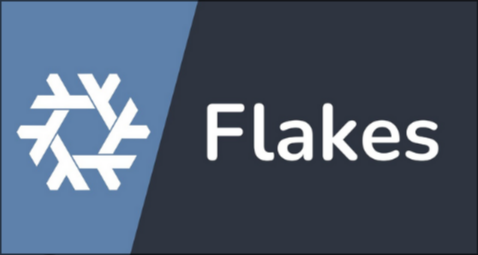

Chapter 1
Getting Started with the Nix Language

Welcome to the world of Nix, a powerful tool for reproducible and declarative software management. In this chapter, we’ll explore the basics of the Nix programming language, a pure, functional, and declarative language that underpins Nix’s package manager and operating system. By the end, you’ll understand Nix’s core concepts, syntax, and how to write simple expressions and derivations.
❗ If you're new to Nix, think of it as a recipe book for software: you describe what you want (declarative), and Nix ensures it’s built the same way every time (reproducible).
Why Learn Nix?
Why Learn Nix?(Click to Expand
Nix is often described as “JSON with functions.” It’s a declarative language where you define outcomes, not step-by-step instructions. Instead of writing sequential code, you create expressions that describe data structures, functions, and dependencies. These expressions are evaluated lazily, meaning Nix computes values only when needed, making it efficient for managing large systems.
Let’s dive into the key characteristics of Nix:
| Concept | Description |
|---|---|
| Pure | Functions don't cause side effects. |
| Functional | Functions can be passed as arguments and returned as results. |
| Lazy | Not evaluated until needed to complete a computation. |
| Declarative | Describing a system outcome. |
| Reproducible | Operations that are performed twice return same results |
❗ Important: In Nix, everything is an expression, there are no statements.
❗ Important: Values in Nix are immutable.
Syntax Basics

-
Dashes are allowed as identifiers:
nix-repl> a-b
error: undefined variable `a-b' at (string):1:1
nix-repl> a - b
error: undefined variable `a' at (string):1:1
❗ Tip
a-bis parsed as an identifier, not as subtraction.
- Strings: Strings are enclosed in double quotes (
") or two single quotes ('').
nix-repl> "stringDaddy"
"stringDaddy"
nix-repl> ''
This is a
multi-line
string
''
"This is a\nmulti-line\nstring.\n"
**String Interpolation(Click to expand)**:
Is a language feature where a string, path, or attribute name can contain expressions enclosed in `${ }`. This construct is called _interpolated string_, and the expression inside is an _interpolated expression_.[string interpolation](https://nix.dev/manual/nix/2.24/language/string-interpolation).Rather than writing:
let path = "/usr/local"; in "--prefix=${path}"
- This evaluates to
"--prefix=/usr/local". Interpolated expressions must evaluate to a string, path, or an attribute set with an outPath or__toStringattribute.
- Attribute sets are all over Nix code, they are name-value pairs wrapped in curly braces, where the names must be unique:
{
string = "hello";
int = 8;
}
- Attribute names usually don't need quotes.
You can access attributes using dot notation:
let person = { name = "Alice"; age = 30; }; in person.name
"Alice"
You will sometimes see attribute sets with rec prepended. This allows access
to attributes within the set:
rec {
x = y;
y = 123;
}.x
Output: 123
or
rec {
one = 1;
two = one + 1;
three = two + 1;
}
# This would fail:
{
one = 1;
two = one + 1; # Error: undefined variable 'one'
three = two + 1;
}
Recursive sets introduce the danger of infinite recursion For example:
rec {
x = y;
y = x;
}.x
-
Will crash with an
infinite recursion encounterederror message. -
The attribute set update operator merges two attribute sets.
Example:
{ a = 1; b = 2; } // { b = 3; c = 4; }
Output:
{ a = 1; b = 3; c = 4; }
- However, names on the right take precedence, and updates are shallow.
Example:
{ a = { b = 1; }; } // { a = { c = 3; }; }
Output:
{ a = { c = 3; }; }
- Above, key
bwas completely removed, because the wholeavalue was replaced.
Inheriting Attributes
let x = 123; in
{
inherit x;
y = 456;
}
is equivalent to
let x = 123; in
{
x = x;
y = 456;
}
Both evaluate to:
{ x = 123; y = 456; }
inheritis commonly used to pick specific variables from the function's arguments, like in:
{ pkgs, lib }: ...
let someVar = ...; in { inherit pkgs lib someVar; ... }
- This shows another common use case beyond just
letbindings.
❗: This works because
xis added to the lexical scope by theletconstruct.
Control Flow with Expressions
If expressions:
nix-repl> a = 6
nix-repl> b = 10
nix-repl> if a > b then "yes" else "no"
"no"
Let expressions:
let
a = "foo";
b = "fighter";
in a + b
"foofighter"
With expressions:
nix-repl> longName = { a = 3; b = 4; }
nix-repl> longName.a + longName.b
7
nix-repl> with longName; a + b
7
Laziness:
- Nix evaluates expressions only when needed. This is a great feature when working with packages.
nix-repl> let a = builtins.div 4 0; b = 6; in b
6
- Since
aisn't needed, there's no error about division by zero, because the expression is not in need to be evaluated. That's why we can have all the packages defined on demand, yet have acces to specific packages very quickly. Some of these examples came from the Nix pill series.
Default Values:
{ x, y ? "foo", z ? "bar" }: z + y + x
- Specifies a function that only requires an attribute named
x, but optionally acceptsyandz.
@-patterns:
- An
@-patternprovides a means of referring to the whole value being matched:
args@{ x, y, z, ... }: z + y + x + args.a
# or
{ x, y, z, ... } @ args: z + y + x + args.a
- Here,
argsis bound to the argument as passed, which is further matched against the pattern{ x, y, z, ... }. The@-patternmakes mainly sense with an ellipsis(...) as you can access attribute names asa, usingargs.a, which was given as an additional attribute to the function.
Functions:
The code below calls a function called my_function with the parameters 2 and
3, and assigns its output to the my_value field:
{
my_value = my_function 2 3;
}
Functions are defined using this syntax, where x and y are attributes passed
into the function:
{
my_function = x: y: x + y;
}
- The body of the function automatically returns the result of the function. Functions are called by spaces between it and its parameters. No commas are needed to separate parameters.
Derivations

-
In Nix, the process of managing software starts with package definitions. These are files written in the Nix language that describe how a particular piece of software should be built. These package definitions, when processed by Nix, are translated into derivations.
-
At its core, a derivation in Nix is a blueprint or a recipe that describes how to build a specific software package or any other kind of file or directory. It's a declarative specification of:
-
Inputs: What existing files or other derivations are needed as dependencies.
-
Build Steps: The commands that need to be executed to produce the desired output.
-
Environment: The specific environment (e.g., build tools, environment variables) required for the build process.
-
Outputs: The resulting files or directories that the derivation produces.
Think of a package definition as the initial instructions, and the derivation as the detailed, low-level plan that Nix uses to actually perform the build."
Again, a derivation is like a blueprint that describes how to build a specific software package or any other kind of file or directory.
Key Characteristics of Derivations:
-
Declarative: You describe the desired outcome and the inputs, not the exact sequence of imperative steps. Nix figures out the necessary steps based on the builder and args.
-
Reproducible: Given the same inputs and build instructions, a derivation will always produce the same output. This is a cornerstone of Nix's reproducibility.
-
Tracked by Nix: Nix keeps track of all derivations and their outputs in the Nix store. This allows for efficient management of dependencies and ensures that different packages don't interfere with each other.
-
Content-Addressed: The output of a derivation is stored in the Nix store under a unique path that is derived from the hash of all its inputs and build instructions. This means that if anything changes in the derivation, the output will have a different path.
Here's a simple Nix derivation that creates a file named hello in the Nix store containing the text "Hello, World!":
**Hello World Derivation Example**(Click to expand):
{ pkgs ? import <nixpkgs> {} }:
pkgs.stdenv.mkDerivation {
name = "hello-world";
src = null; # No external source code needed for this simple example
buildPhase = ''
echo "Hello, World!" > $out
'';
installPhase = ''
mkdir -p $out/bin
cp $out $out/bin/hello
chmod +x $out/bin/hello
'';
meta = {
description = "A simple Hello World program built with Nix";
homepage = null;
license = lib.licenses.unfree; # For simplicity
maintainers = [];
};
}
-
{ pkgs ? import <nixpkgs> {} }: This is a function that takes an optional argumentpkgs. We need Nixpkgs to access standard build environments likestdenv. -
pkgs.stdenv.mkDerivation { ... }:This calls the mkDerivation function from the standard environment (stdenv). mkDerivation is the most common way to define software packages in Nix. -
name = "hello-world";: Human-readable name of the derivation -
src = null: No external source code for this simple example -
The rest are the build phases and package metadata.
To use the above derivation, save it as a .nix file (e.g. hello.nix). Then
build the derivation using:
nix build ./hello.nix
-
Nix will execute the
buildPhaseandinstallPhase -
After a successful build, the output will be in the Nix store. You can find the exact path by looking at the output of the nix build command (it will be something like
/nix/store/your-hash-hello-world).
Run the "installed" program:
./result/bin/hello
- This will execute the
hellofile from the Nix store and print "Hello, World!".
Use nix-instantiate --eval to evaluate the expression in a Nix file:
echo 1 + 2 > file.nix
nix-instantiate --eval file.nix
3
Note:
--evalis required to evaluate the file and do nothing else. If--evalis omitted,nix-instantiateexpects the expression in the given file to evaluate to a derivation.
If you don't specify an argument, nix-instantiate --eval will try to read from
default.nix in the current directory.
Conclusion
As we have now seen, this chapter touched on the basic syntax of function definition and application, including concepts like currying. However, the power and flexibility of Nix functions extend far beyond what we've covered so far.
In the next chapter, Understanding Nix Functions we will peel back the layers and explore the intricacies of function arguments, advanced patterns, scope, and how functions play a crucial role in building more sophisticated Nix expressions and derivations.
Here are some resources that I found helpful when learning the Nix Language.
Resources
Chapter 2
Understanding Nix Functions

Functions are the building blocks of Nix, appearing everywhere in Nix expressions and configurations. Mastering them is essential for writing effective Nix code and understanding tools like NixOS and Home Manager. This chapter explores how Nix functions work, focusing on their single-argument nature, currying, partial application, and their role in modules.
What are Nix Functions?
A Nix Function is a rule that takes an input (called an argument) and produces an output based on that input. Unlike many programming languages, Nix functions are designed to take exactly one argument at a time. This unique approach, combined with a technique called currying, allows Nix to simulate multi-argument functions in a flexible and reusable way.
First I wanted to explain the structure of Nix Functions, and then we will talk about their "first-class" nature in Nix.
Understanding Function Structure: The Role of the Colon
The colon (:) acts as a clear separator within a function definition:
Click to expand this section
-
Left of the Colon: This is the function's argument. It's a placeholder name for a value that will be provided when the function is called.
-
Right of the Colon: This is the function body. It's the expression that will be evaluated when the function is invoked.
Think of function arguments as naming values that aren't known in advance. These names are placeholders that get filled with specific values when the function is used.
Example:
greet = personName: "Hello, ${personName}!";
-
Here,
personNameis the argument (the placeholder). -
"Hello, ${personName}!", is the function body (which uses the placeholder to create the greeting).
When you call the function:
greet "Anonymous" # Evaluates to "Hello, Anonymous!"
-
The value
"Anonymous"is substituted for thepersonNameplaceholder within the function body. -
This structure is the foundation of all Nix functions, whether simple or complex.
Declaring Functions: Single and Simulated "Multiple" Arguments
Single-Argument Functions: The Basics
The simplest form of a Nix function takes a single argument. In Nix, function
definitions like x: x + 1 or personName: "Hello, ${personName}!"; are
anonymous lambda functions. They exist as values until they are assigned
to a variable.
# This is an anonymous lambda function value:
# x: x + 1
inc = x: x + 1; # here we assigned our lambda to a variable `inc`
inc 5 # Evaluates to 6
-
xis the argument. -
x + 1is the function body. -
This straightforward design makes single-argument functions easy to understand and use. But what if you need a function that seems to take multiple arguments? That's where currying comes in.
Simulating Multiple Arguments: Currying
To create functions that appear to take multiple arguments, Nix uses currying. This involves nesting single-argument functions, where each function takes one argument and returns another function that takes the next argument, and so on.
# concat is equivalent to:
# concat = x: (y: x + y);
concat = x: y: x + y;
concat 6 6 # Evaluates to 12
Here, concat is actually two nested functions
-
The first function takes
xand returns another function. -
The second function takes
yand performsx + y
Nix interprets the colons (:) as separators for this chain of single-argument
functions.
Here's how it works step by step:
-
When you call
concat 6, the outer function bindsxto6and returns a new function:y: 6 + y. -
When you call that function with
6(i.e.,concat 6 6), it computes6 + 6, resulting in12.
This chaining is why Nix functions are so powerful—it allows you to build flexible, reusable functions.
A More Practical Example: Greetings:
Let's explore currying with a more relatable example in the nix repl:
nix repl
nix-repl> greeting = prefix: name: "${prefix}, ${name}!";
nix-repl> greeting "Hello"
<<lambda @ <<string>>:1:10>> # partial application returns a lambda
nix-repl> greeting "Hello" "Alice"
"Hello, Alice!" # providing both arguments returns the expected result
This function is a chain of two single-argument functions:
-
The outer function takes
prefix(e.g."Hello") and returns a function that expectsname. -
The inner function takes
name(e.g."Alice") and combines it withprefixto produce the final string.
Thanks to lexical scope (where inner functions can access variables from
outer functions), the inner function "remembers" the prefix value.
Why Currying Matters
-
You can partially apply arguments and reuse functions.
-
The "first-class" aspect of Nix Functions, explained further down.
-
It can help break down complex logic into smaller, manageable functions.
Key Insight: Every colon in a function definition separates a single argument from its function body, even if that body is another function definition.
Partial Application: Using Functions Incrementally
Because of currying, you can apply arguments to a Nix function one at a time. This is called partial application. When you provide only some of the expected arguments, you get a new function that "remembers" the provided arguments and waits for the rest.
Example:
Using our greeting function again:
nix repl
nix-repl> greeting = prefix: name: "${prefix}, ${name}!";
nix-repl> helloGreeting = greeting "Hello";
nix-repl> helloGreeting "Alice"
"Hello, Alice"
helloGreetingis now a new function. It has already received theprefixargument ("Hello"), when we provide the second argument we get"Hello, Alice!"
Benefits of Partial Application:
-
Creating Specialized Functions: You can create more specific functions from general ones by fixing some of their parameters.
-
Adapting to Higher-Order Functions: Many functions that operate on other functions (like
mapandfilter) expect functions with a certain number of arguments. Partial application allows you to adapt existing functions to fit these requirements.
Nix Functions being "first class citizens"
In the context of Nix, the phrase "Nix treats functions as first-class citizens" means that functions in Nix are treated as values, just like numbers, strings, or lists. They can be manipulated, passed around, and used in the same flexible ways as other data types. This concept comes from functional programming and has specific implications in Nix.
What It Means in Nix
- Functions Can Be Assigned to Variables:
-
You can store a function in a variable, just like you would store a number or string.
-
Example:
greet = name: "Hello, ${name}!";
Here, greet is a variable that holds a function.
- Functions Can Be Passed as Arguments:
-
You can pass a function to another function as an argument, allowing for higher-order functions (functions that operate on other functions).
-
Example:
applyTwice = f: x: f (f x);
inc = x: x + 1;
applyTwice inc 5 # Output: 7 (increments 5 twice: 5 → 6 → 7)
- Here, applyTwice takes a function
f(in this case,inc) and applies it toxtwice.
- Functions Can Be Returned from Functions:
-
Functions can produce other functions as their output, which is key to currying in Nix.
-
Example:
greeting = prefix: name: "${prefix}, ${name}!";
helloGreeting = greeting "Hello"; # Returns a function
helloGreeting "Alice" # Output: "Hello, Alice!"
- The greeting function returns another function when partially applied with prefix.
- Functions Are Values in Expressions:
-
Functions can be used anywhere a value is expected, such as in attribute sets or lists.
-
Example:
myFuncs = {
add = x: y: x + y;
multiply = x: y: x * y;
};
myFuncs.add 3 4 # Output: 7
-
Here, functions are stored as values in an attribute set.
-
To try this in the
repljust remove the semi-colon (;)
Why This Matters in Nix:
-
This functional approach is fundamental to Nix's unique build system. In Nix, package builds (called derivations) are essentially functions. They take specific inputs (source code, dependencies, build scripts) and deterministically produce outputs (a built package).
- This design ensures atomicity: if a build does not succeed completely and perfectly, it produces no output at all. This prevents situations common in other package managers where partial updates or corrupted builds can leave your system in an inconsistent or broken state.
-
It increases the flexibility of Functions making them very powerful.
-
Many NixOS and Home Manager modules are functions, and their first-class status means they can be combined, reused, or passed to other parts of the configuration system.
-
Now that we understand the "first-class" nature of Nix Functions let's see how they fit into NixOS and Home Manager modules.
The Function Nature of NixOS and Home Manager Modules
It's crucial to understand that most NixOS and Home Manager modules are fundamentally functions.
- These module functions typically accept a single argument: an attribute set.
Example:
A NixOS module to enable Thunar with some plugins that I'm actually using right now:
{pkgs, ...}: {
programs = {
thunar = {
enable = true;
plugins = with pkgs.xfce; [
thunar-archive-plugin
thunar-volman
];
};
};
}
-
The entire module definition is a function that takes one argument (an attribute set):
{ pkgs, ... }. -
When this module is included in your configuration, the NixOS module system calls this function with a specific attribute set. This attribute set contains the available packages (
pkgs), and other relevant information. The module then uses these values to define parts of your system.
Conclusion
Having explored the fundamental nature of functions in Nix, we can now see this concept applies to more complex areas like NixOS configuration. In the next chapter, NixOS Modules Explained. We will learn about NixOS Modules which are themselves functions most of the time.
Resources
Chapter 3
NixOS Modules Explained

TL;DR: In this post I break down the NixOS module system and explain how to define options. As well as how to test modules with the repl.
- Most modules are functions that take an attribute set and return an attribute set.
**Refresher**(Click to Expand):
-
An attribute set is a collection of name-value pairs called attributes:
-
Attribute sets are written enclosed in curly braces
{}. Attribute names and attribute values are separated by an equal sign=. Each value can be an arbitrary expression, terminated by a semicolon;.
Example:nix.dev reference This defines an attribute set with attributes named:
xwith the value123, an integertextwith the value"Hello", a stringywhere the value is the result of applying the functionfto the attribute set{bla = 456; }{ x = 123; text = "Hello"; y = f { bla = 456; }; }{ a = "Foo"; b = "Bar"}.a # Output: `"Foo"`
- Attributes can appear in any order. An attribute name may only occur once in each attribute set.
❗ Remember
{}is a valid attribute set in Nix.
- The following is a function with an attribute set argument, remember that
anytime you see a
:in Nix code it means this is a function. To the left is the function arguments and to the right is the function body:
{ a, b }: a + b
- The simplest possible NixOS Module:
{ ... }:
{
}
NixOS produces a full system configuration by combining smaller, more isolated and reusable components: Modules. If you want to understand Nix and NixOS make sure you grasp modules!
-
A NixOS module defines configuration options and behaviors for system components, allowing users to extend, customize, and compose configurations declaratively.
-
A module is a file containing a Nix expression with a specific structure. It declares options for other modules to define (give a value). Modules were introduced to allow extending NixOS without modifying its source code.
-
To define any values, the module system first has to know which ones are allowed. This is done by declaring options that specify which attributes can be set and used elsewhere.
-
If you want to write your own modules, I recommend setting up nixd or nil with your editor of choice. This will allow your editor to warn you about missing arguments and dependencies as well as syntax errors.
Declaring Options
The following is nixpkgs/nixos/modules/programs/vim.nix:
{
config,
lib,
pkgs,
...
}:
let
cfg = config.programs.vim;
in
{
options.programs.vim = {
enable = lib.mkEnableOption "Vi IMproved, an advanced text";
defaultEditor = lib.mkEnableOption "vim as the default editor";
package = lib.mkPackageOption pkgs "vim" { example = "vim-full"; };
};
# TODO: convert it into assert after 24.11 release
config = lib.mkIf (cfg.enable || cfg.defaultEditor) {
warnings = lib.mkIf (cfg.defaultEditor && !cfg.enable) [
"programs.vim.defaultEditor will only work if programs.vim.enable is
enabled, which will be enforced after the 24.11 release"
];
environment = {
systemPackages = [ cfg.package ];
variables.EDITOR = lib.mkIf cfg.defaultEditor (lib.mkOverride 900 "vim");
pathsToLink = [ "/share/vim-plugins" ];
};
};
}
- It provides options to enable Vim, set it as the default editor, and specify the Vim package to use.
Breakdown of the `vim` module.(Click to Expand)
1. Module Inputs and Structure:{
config,
lib,
pkgs,
...
}
-
Inputs: The module takes the above inputs and
...(catch-all for other args)-
config: Allows the module to read option values (e.g.config.programs.vim.enable). It provides access to the evaluated configuration. -
lib: The Nixpkgs library, giving us helper functions likemkEnableOption,mkIf, andmkOverride. -
pkgs: The Nixpkgs package set, used to access packages likepkgs.vim -
...: Allows the module to accept additional arguments, making it flexible for extension in the future.
-
Key Takeaways: A NixOS module is typically a function that can include
config,lib, andpkgs, but it doesn’t require them. The...argument ensures flexibility, allowing a module to accept extra inputs without breaking future compatibility. Usinglibsimplifies handling options (mkEnableOption, mkIf, mkOverride) and helps follow best practices. Modules define options, which users can set in their configuration, andconfig, which applies changes based on those options.
- Local Configuration Reference:
let
cfg = config.programs.vim;
in
- This is a local alias. Instead of typing
config.programs.vimover and over, the module usescfg.
- Option Declaration
options.programs.vim = {
enable = lib.mkEnableOption "Vi IMproved, an advanced text";
defaultEditor = lib.mkEnableOption "vim as the default editor";
package = lib.mkPackageOption pkgs "vim" { example = "vim-full"; };
};
This defines three user-configurable options:
-
enable: Turns on Vim support system-wide. -
defaultEditor: Sets Vim as the system's default$EDITOR. -
package: lets the user override which Vim package is used.
mkPackageOptionis a helper that defines a package-typed option with a default (pkgs.vim) and provides docs + example.
- Conditional Configuration
config = lib.mkIf (cfg.enable || cfg.defaultEditor) {
- This block is only activated if either
programs.vim.enableordefaultEditoris set.
- Warnings
warnings = lib.mkIf (cfg.defaultEditor && !cfg.enable) [
"programs.vim.defaultEditor will only work if programs.vim.enable is enabled,
which will be enforced after the 24.11 release"
];
- Gives you a soft warning if you try to set
defaultEditor = truewithout also enabling Vim.
- Actual System Config Changes
environment = {
systemPackages = [ cfg.package ];
variables.EDITOR = lib.mkIf cfg.defaultEditor (lib.mkOverride 900 "vim");
pathsToLink = [ "/share/vim-plugins" ];
};
- It adds Vim to your
systemPackages, sets$EDITORifdefaultEditoris true, and makes/share/vim-pluginsavailable in the environment.
The following is a bat home-manager module that I wrote:
# bat.nix
{
pkgs,
config,
lib,
...
}: let
cfg = config.custom.batModule;
in {
options.custom.batModule.enable = lib.mkOption {
type = lib.types.bool;
default = false;
description = "Enable bat module";
};
config = lib.mkIf cfg.enable {
programs.bat = {
enable = true;
themes = {
dracula = {
src = pkgs.fetchFromGitHub {
owner = "dracula";
repo = "sublime"; # Bat uses sublime syntax for its themes
rev = "26c57ec282abcaa76e57e055f38432bd827ac34e";
sha256 = "019hfl4zbn4vm4154hh3bwk6hm7bdxbr1hdww83nabxwjn99ndhv";
};
file = "Dracula.tmTheme";
};
};
extraPackages = with pkgs.bat-extras; [
batdiff
batman
prettybat
batgrep
];
};
};
}
Now I could add this to my home.nix to enable it:
# home.nix
custom = {
batModule.enable = true;
}
-
If I set this option to true the bat configuration is dropped in place. If it's not set to true, it won't put the bat configuration in the system. Same as with options defined in modules within the Nixpkgs repository.
-
If I had set the default to
true, it would automatically enable the module without requiring an explicitcustom.batModule.enable = true;call in myhome.nix.
Module Composition
-
NixOS achieves its full system configuration by combining the configurations defined in various modules. This composition is primarily handled through the
importsmechanism. -
imports: This is a standard option within a NixOS or Home Manager configuration (often found in your configuration.nix or home.nix). It takes a list of paths to other Nix modules. When you include a module in the imports list, the options and configurations defined in that module become part of your overall system configuration. -
You declaratively state the desired state of your system by setting options across various modules. The NixOS build system then evaluates and merges these option settings. The culmination of this process, which includes building the entire system closure, is represented by the derivation built by
config.system.build.toplevel.
NixOS Modules and Dependency Locking with npins
`npins` example (Click to Expand)
As our NixOS configurations grow in complexity, so too does the challenge of managing the dependencies they rely on. Ensuring consistency and reproducibility not only applies to individual packages but also to the versions of Nixpkgs and other external resources our configurations depend upon.Traditionally, NixOS configurations often implicitly rely on the version of
Nixpkgs available when nixos-rebuild is run. However, for more robust and
reproducible setups, especially in collaborative environments or when rolling
back to specific configurations, explicitly locking these dependencies to
specific versions becomes crucial.
In the following example, we'll explore how to use a tool called npins to
manage and lock the dependencies of a NixOS configuration, ensuring a more
predictable and reproducible system. This will involve setting up a project
structure and using npins to pin the specific version of Nixpkgs our
configuration relies on.
This is the file structure:
❯ tree
.
├── configuration.nix
├── default.nix
├── desktop.nix
└── npins
├── default.nix
└── sources.json
This uses npins for dependency locking. Install it and run this in the project
directory:
npins init
Create a default.nix with the following:
# default.nix
{ system ? builtins.currentSystem, sources ? import ./npins, }:
let
pkgs = import sources.nixpkgs {
config = { };
overlays = [ ];
};
inherit (pkgs) lib;
in lib.makeScope pkgs.newScope (self: {
shell = pkgs.mkShell { packages = [ pkgs.npins self.myPackage ]; };
# inherit lib;
nixosSystem = import (sources.nixpkgs + "/nixos") {
configuration = ./configuration.nix;
};
moduleEvale = lib.evalModules {
modules = [
# ...
];
};
})
A configuration.nix with the following:
# configuration.nix
{
boot.loader.grub.device = "nodev";
fileSystems."/".device = "/devst";
system.stateVersion = "25.05";
# declaring options means to declare a new option
# defining options means to define a value of an option
imports = [
# ./main.nix
./desktop.nix # Files
# ./minimal.nix
];
# mine.desktop.enable = true;
}
And a desktop.nix with the following:
# desktop.nix
{ pkgs, lib, config, ... }:
{
imports = [];
# Define an option to enable or disable desktop configuration
options.mine.desktop.enable = lib.mkEnableOption "desktop settings";
# Configuration that applies when the option is enabled
config = lib.mkIf config.mine.desktop.enable {
environment.systemPackages = [ pkgs.git ];
};
}
mkEnableOption defaults to false. Now in your configuration.nix you can
uncomment mine.desktop.enable = true; to enable the desktop config and
vice-versa.
You can test that this works by running:
nix-instantiate -A nixosSystem.system
nix-instantiateperforms only the evaluation phase of Nix expressions. During this phase, Nix interprets the Nix code, resolves all dependencies, and constructs derivations but does not execute any build actions. Useful for testing.
To check if this worked and git is installed in systemPackages you can
load it into nix repl but first you'll want lib to be available so uncomment
this in your default.nix:
# default.nix
inherit lib;
Rerun nix-instantiate -A nixosSystem.system
Then load the repl and check that git is in systemPackages:
nix repl -f .
nix-repl> builtins.filter (pkg: lib.hasPrefix "git" pkg.name) nixosSystem.config.environment.systemPackages
This shows the path to the derivation
Check that mine.desktop.enable is true
nix-repl> nixosSystem.config.mine.desktop.enable
true
As demonstrated with npins, explicitly managing the dependencies of your NixOS modules is a powerful technique for ensuring the long-term stability and reproducibility of your system configurations. By pinning specific versions of Nixpkgs and other resources, you gain greater control over your environment and reduce the risk of unexpected changes due to upstream updates.
Best Practices
You'll see the following all throughout Nix code and is convenient although it doesn't follow best practices. One reason is static analysis can't reason about the code, because it would have to actually evaluate the files to see which names are in scope:
# utils.nix
{ pkgs, ... }: {
environment.systemPackages = with pkgs; [
rustup
evcxr
nix-prefetch-git
];
}
The following follows best practices:
{pkgs, ... }: {
environment.systemPackages = builtins.attrValues {
inherit (pkgs)
rustup
evcxr
nix-prefetch-git;
};
}
-
builtins.attrValuesessentially converts an attribute set into a list. -
The above approach avoids scope pollution,
with pkgs; [...]brings all attributes ofpkgsinto scope, which can make it harder to track where specific values come from. -
It can lead to unintended name clashes or confusion when debugging.
Upon looking into this a bit further, most people use the following format to
avoid the "anti-pattern" from using with pkgs;:
# utils.nix
{ pkgs, ... }: {
environment.systemPackages = [
pkgs.rustup
pkgs.evcxr
pkgs.nix-prefetch-git
];
}
- While the performance differences might be negligible on modern computers, adopting this best practice from the start is highly recommended.
Conclusion
As we have seen throughout this chapter, modules are the building blocks of your NixOS system and are themselves often functions. There are a few different ways to use these modules to build your system. In the next chapter, Nix Flakes Explained we will learn about Nix Flakes as a more modern and comprehensive entrypoint for managing your entire system and its dependencies.
To further deepen your understanding of NixOS Modules and the broader ecosystem of tools and best practices surrounding them, the following resources offer valuable insights and information.
Resources on Modules
Videos
NixHour Writing NixOS modules -- This example is from this video infinisilModules
Chapter 4
Nix Flakes Explained

This explanation highlights common areas of confusion for those new to Nix Flakes, aiming to clarify concepts rather than serve as a comprehensive guide.
What is a Nix Flake?
-
At its core, a flake is a source tree (like a Git repository) that contains a
flake.nixfile. This file provides a standardized way to access Nix artifacts such as packages and modules. -
Think of
flake.nixas the central entry point of a flake. It not only defines what the flake produces but also declares its dependencies.
Key Concepts
flake.nix: The Heart of a Flake
- The
flake.nixfile is mandatory for any flake. It must contain an attribute set with at least one required attribute:outputs. It can also optionally includedescriptionandinputs. - Basic Structure:
{
description = "Package description";
inputs = { /* Dependencies go here */ };
outputs = { /* What the flake produces */ };
nixConfig = { /* Advanced configuration options */ };
}
Nix Flake Commands
nix flakeprovides subcommands for creating, modifying and querying Nix Flakes. Flakes are the unit for packaging Nix code in a reproducible and discoverable way. They can have dependencies on other flakes, making it possible to have multi-repository Nix projects.
— From nix.dev Reference Manual
-
The main thing to note here is that
nix flakeis used to manage Nix flakes and that Flake commands are whitespace separated rather than hyphen-separated. -
Flakes do provide some advantages when it comes to discoverability of outputs.
-
For Example, two helpful commands to inspect a flake are:
-
nix flake show command: Show the outputs provided by a flake.
-
nix flake check command: check whether the flake evaluates and run its tests.
-
Attribute Sets: The Building Blocks
-
Attribute sets are fundamental in Nix. They are simply collections of name-value pairs wrapped in curly braces
{}.- Example:
let my_attrset = { foo = "bar"; }; in my_attrset.foo- Output:
"bar" -
Top-Level Attributes of a Flake:
- Flakes have specific top-level attributes that can be accessed directly
(without dot notation). The most common ones are
inputs,outputs, andnixConfig.
- Flakes have specific top-level attributes that can be accessed directly
(without dot notation). The most common ones are
Anatomy of flake.nix

inputs: Declaring Dependencies
-
The
inputsattribute set specifies the other flakes that your current flake depends on. -
Each key in the
inputsset is a name you choose for the dependency, and the value is a reference to that flake (usually a URL or a Git Repo). -
To access something from a dependency, you generally go through the
inputsattribute (e.g.,inputs.helix.packages).- Example: This declares dependencies on the
nixpkgsandimport-cargoflakes:
inputs = { import-cargo.url = "github:edolstra/import-cargo"; nixpkgs.url = "nixpkgs"; };-
When Nix evaluates your flake, it fetches and evaluates each input. These evaluated inputs are then passed as an attribute set to the outputs function, with the keys matching the names you gave them in the inputs set.
-
The special input
selfis a reference to theoutputsand the source tree of the current flake itself.
- Example: This declares dependencies on the
outputs: Defining What Your Flake Provides
-
The
outputsattribute defines what your flake makes available. This can include packages, NixOS modules, development environments (devShells) and other Nix derivations. -
Flakes can output arbitrary Nix values. However, certain outputs have specific meanings for Nix commands and must adhere to particular types (often derivations, as described in the output schema).
-
You can inspect the outputs of a flake using the command:
nix flake show
This command takes a flake URI and displays its outputs in a tree structure, showing the attribute paths and their corresponding types.
Understanding the outputs Function
-
Beginners often mistakenly think that self and nixpkgs within
outputs = { self, nixpkgs, ... }: { ... }are the outputs themselves. Instead, they are the input arguments (often called output arguments) to the outputs function. -
The outputs function in
flake.nixalways takes a single argument, which is an attribute set. The syntax{ self, nixpkgs, ... }is Nix's way of destructuring this single input attribute set to extract the values associated with the keys self and nixpkgs.
Referencing the Current Flake (self)
-
selfprovides a way to refer back to the current flake from within the outputs function. You can use it to access other top-level attributes like inputs (e.g.,self.inputs). -
The outputs function always receives an argument conventionally named self, which represents the entire flake, including all its top-level attributes. You'll typically use self to reference things defined within your own flake (e.g.,
self.packages.my-package).
Variadic Attributes (...) and @-patterns
-
The
...syntax in the input arguments of the outputs function indicates variadic attributes, meaning the input attribute set can contain more attributes than just those explicitly listed (likeselfandnixpkgs).Example:
mul = { a, b, ... }: a \* b; mul { a = 3; b = 4; c = 2; } # 'c' is an extra attributeHowever, you cannot directly access these extra attributes within the function body unless you use the @-pattern:
mul = s@{ a, b, ... }: a _ b _ s.c; # 's' now refers to the entire input set mul { a = 3; b = 4; c = 2; } # Output: 24-
When used in the outputs function argument list (e.g.,
outputs = { pkgs, ... } @ inputs), the @-pattern binds the entire input attribute set to a name (in this case,inputs) while also allowing you to destructure specific attributes like pkgs. -
What
outputs = { pkgs, ... } @ inputs: { ... };does:
-
-
Destructuring: It tries to extract the value associated with the key
pkgsfrom the input attribute set and binds it to the variablepkgs. The...allows for other keys in the input attribute set to be ignored during this direct destructuring. -
Binding the Entire Set: It binds the entire input attribute set to the variable inputs.
- Example
flake.nix:
- Example
{
inputs.nixpkgs.url = "github:NixOS/nixpkgs/nixos-unstable";
inputs.home-manager.url = "github:nix-community/home-manager";
outputs = { self, nixpkgs, ... } @ attrs: { # A `packages` output for the x86_64-linux platform
packages.x86_64-linux.hello = nixpkgs.legacyPackages.x86_64-linux.hello;
# A `nixosConfigurations` output (for a NixOS system named "fnord")
nixosConfigurations.fnord = nixpkgs.lib.nixosSystem {
system = "x86_64-linux";
specialArgs = attrs;
modules = [ ./configuration.nix ];
};
};
}
Platform Specificity in Outputs
- Flakes ensure that their outputs are consistent across different evaluation
environments. Therefore, any package-related output must explicitly specify
the target platform (a combination of architecture and OS,
x86_64-linux).
legacyPackages Explained
legacyPackagesis a way for flakes to interact with the traditional, less structured package organization of nixpkgs. Instead of packages being directly at the top level (e.g.,pkgs.hello),legacyPackagesprovides a platform-aware way to access them within the flake's structured output format (e.g.,nixpkgs.legacyPackages.x86_64-linux.hello). It acts as a bridge between the flake's expected output structure and nixpkgs's historical organization.
The Sole Argument of outputs
- It's crucial to remember that the outputs function accepts only one argument,
which is an attribute set. The
{ self, nixpkgs, ... }syntax is simply destructuring that single input attribute set.
Outputs of the Flake (Return Value)
- The outputs of the flake refer to the attribute set that is returned by the
outputsfunction. This attribute set can contain various named outputs likepackages,nixosConfigurations,devShells, etc.
Imports: Including Other Nix Expressions
-
The
importfunction in Nix is used to evaluate the Nix expression found at a specified path (usually a file or directory) and return its value. -
Basic Usage: import
./path/to/file.nix
Passing Arguments During Import
- You can also pass an attribute set as an argument to the Nix expression being imported:
let
myHelpers = import ./lib/my-helpers.nix { pkgs = nixpkgs; };
in
# ... use myHelpers
- In this case, the Nix expression in
./lib/my-helpers.nixis likely a function that expects an argument (often namedpkgsby convention):
# ./lib/my-helpers.nix
{ pkgs }:
let
myPackage = pkgs.stdenv.mkDerivation {
name = "my-package"; # ...
};
in
myPackage
- By passing
{ pkgs = nixpkgs; }during the import, you are providing the nixpkgs value from your currentflake.nixscope to the pkgs parameter expected by the code in./lib/my-helpers.nix.
Importing Directories (default.nix)
- When you use import with a path that points to a directory, Nix automatically
looks for a file named
default.nixwithin that directory. If found, Nix evaluates the expressions withindefault.nixas if you had specified its path directly in the import statement.
Conclusion: Unifying Your Nix Experience with Flakes
In this chapter, we've explored Nix Flakes as a powerful and modern approach to managing Nix projects, from development environments to entire system configurations. We've seen how they provide structure, dependency management, and reproducibility through well-defined inputs and outputs. Flakes offer a cohesive way to organize your Nix code and share it with others.
As we've worked with the flake.nix file, you've likely noticed its structure – a top-level attribute set defining various outputs like devShells, packages, nixosConfigurations, and more. These top-level attributes are not arbitrary; they follow certain conventions and play specific roles within the Flake ecosystem.
In the next chapter, Understanding Top-Level Attributes we will delve deeper into the meaning and purpose of these common top-level attributes. We'll explore how they are structured, what kind of expressions they typically contain, and how they contribute to the overall functionality and organization of your Nix Flakes. Understanding these attributes is key to effectively leveraging the full potential of Nix Flakes.
Further Resources

Chapter 5
Understanding Top-Level Attributes in NixOS Modules

This explanation is based on insights from Infinisil, a prominent figure in the Nix community, to help clarify the concept of top-level attributes within NixOS modules.
The Core of a NixOS System: system.build.toplevel
`system.build.toplevel` Explained (Click to Expand)
In a NixOS system, everything is built from a single "system derivation." The
command nix-build '<nixpkgs/nixos>' -A system initiates this build process.
The -A system part tells Nix to focus on the system attribute defined in
the '<nixpkgs/nixos>' file (which is essentially ./default.nix within the
Nixpkgs repository).
This system attribute is specifically the NixOS option system.build.toplevel
. Think of system.build.toplevel as the very top of the configuration
hierarchy for your entire NixOS system. Almost every setting you configure
eventually influences this top-level derivation, often through a series of
intermediate steps.
Key Takeaway: system.build.toplevel is the ultimate output that defines your entire NixOS system.
nix-build '<nixpkgs/nixos>' -A system initiates this build process.-A system part tells Nix to focus on the system attribute defined in
the '<nixpkgs/nixos>' file (which is essentially ./default.nix within the
Nixpkgs repository).system attribute is specifically the NixOS option system.build.toplevel
. Think of system.build.toplevel as the very top of the configuration
hierarchy for your entire NixOS system. Almost every setting you configure
eventually influences this top-level derivation, often through a series of
intermediate steps.system.build.toplevel is the ultimate output that defines your entire NixOS system.How Options Relate: A Chain of Influence
Options in NixOS are not isolated; they often build upon each other. Here's an example of how a high-level option can lead down to a low-level system configuration:
- You enable Nginx with
services.nginx.enable = true;. - This setting influences the lower-level option
systemd.services.nginx. - Which, in turn, affects the even lower-level option
systemd.units."nginx.service". - Ultimately, this leads to the creation of a systemd unit file within
environment.etc."systemd/system". - Finally, this unit file ends up as
result/etc/systemd/system/nginx.servicewithin the finalsystem.build.toplevelderivation.
Key Takeaway: Higher-level, user-friendly options are translated into lower-level system configurations that are part of the final system build.
The NixOS Module System: Evaluating Options
So, how do these options get processed and turned into the final system
configuration? That's the job of the NixOS module system, located in the
./lib directory of Nixpkgs (specifically in modules.nix, options.nix,
and types.nix).
Interestingly, the module system isn't exclusive to NixOS; you can use it to manage option sets in your own Nix projects.
Here's a simplified example of using the module system outside of NixOS:
let
systemModule = { lib, config, ... }: {
options.toplevel = lib.mkOption {
type = lib.types.str;
};
options.enableFoo = lib.mkOption {
type = lib.types.bool;
default = false;
};
config.toplevel = ''
Is foo enabled? ${lib.boolToString config.enableFoo}
'';
};
userModule = {
enableFoo = true;
};
in (import <nixpkgs/lib>).evalModules {
modules = [ systemModule userModule ];
}
You can evaluate the config.toplevel option from this example using:
nix-instantiate --eval file.nix -A config.toplevel
Key Takeaway: The NixOS module system is responsible for evaluating and merging option configurations from different modules.
How the Module System Works: A Simplified Overview
The module system processes a set of "modules" through these general steps:
-
Importing Modules: It recursively finds and includes all modules specified in
imports = [ ... ];statements. -
Declaring Options: It collects all option declarations defined using
options = { ... };from all the modules and merges them. If the same option is declared in multiple modules, the module system handles this (details omitted for simplicity). -
Defining Option Values: For each declared option, it gathers all the value assignments (defined using
config = { ... };or directly at the top level if nooptionsorconfigare present) from all modules and merges them according to the option's defined type.
Important Note: Option evaluation is lazy, meaning an option's value is only computed when it's actually needed. It can also depend on the values of other options.
Key Takeaway: The module system imports, declares, and then evaluates option values from various modules to build the final configuration.
Top-Level Attributes in a Module: imports, options, and config
Within a NixOS module (the files that define parts of your system configuration) , the attributes defined directly at the top level of the module's function have specific meanings:
-
imports: This attribute is a list of other module files to include. Their options and configurations will also be part of the evaluation. -
options: This attribute is where you declare new configuration options. You define their type, default value, description, etc., using functions likelib.mkOptionorlib.mkEnableOption. -
config: This attribute is where you assign values to the options that have been declared (either in the current module or in imported modules).
Key Takeaway: The top-level attributes imports, options, and config
are the primary ways to structure a NixOS module.
The Rule: Move Non-Option Attributes Under config
If you define either an options or a config attribute at the top level of
your module, any other attributes that are not option declarations must be
moved inside the config attribute.
Let's look at an example of what not to do:
{ pkgs, lib, config, ... }:
{
imports = [];
# Defining an option at the top level
options.mine.desktop.enable = lib.mkEnableOption "desktop settings";
# This will cause an error because 'environment' and 'appstream'
# are not 'options' and 'config' is also present at the top level.
environment.systemPackages =
lib.mkIf config.appstream.enable [ pkgs.git ];
appstream.enable = true;
}
This will result in the error: error: Module has an unsupported attribute 'appstream' This is caused by introducing a top-level 'config' or 'options' attribute. Add configuration attributes immediately on the top level instead, or move all of them into the explicit 'config' attribute.
Key Takeaway: When you have options or config at the top level, all
value assignments need to go inside the config block.
The Correct Way): Using the config Attribute
To fix the previous example, you need to move the value assignments for
environment.systemPackages and appstream.enable inside the config attribute:
{ pkgs, lib, config, ... }:
{
imports = [];
# Defining an option at the top level
options.mine.desktop.enable = lib.mkEnableOption "desktop settings";
config = {
environment.systemPackages =
lib.mkIf config.appstream.enable [ pkgs.git ];
appstream.enable = true;
};
}
Now, Nix knows that you are declaring an option (options.mine.desktop.enable)
and then setting values for other options (environment.systemPackages,
appstream.enable) within the config block.
Key Takeaway: The config attribute is used to define the values of
options.
Implicit config: When options is Absent
If your module does not define either options or config at the top level,
then any attributes you define directly at the top level are implicitly
treated as being part of the config.
For example, this is valid:
{ pkgs, lib, config, ... }:
{
environment.systemPackages =
lib.mkIf config.appstream.enable [ pkgs.git ];
appstream.enable = true;
}
Nix will implicitly understand that environment.systemPackages and
appstream.enable are configuration settings.
Key Takeaway: If no explicit options or config are present, top-level attributes are automatically considered part of the configuration.
Removing an Option: What Happens to config
Even if you remove the options declaration from a module that has a config
section, the config = { environment.systemPackages = ... }; part will still
function correctly, assuming the option it's referencing (appstream.enable
in this case) is defined elsewhere (e.g., in an imported module).
Key Takeaway: The config section defines values for options, regardless
of whether those options are declared in the same module.
Conclusion
Understanding the nuances of top-level attributes within NixOS modules, particularly
imports, options, and config, is fundamental to structuring and managing
your system's configuration effectively. As we've seen, the module system
provides a powerful and declarative way to define and evaluate system settings,
ultimately contributing to the construction of the system.build.toplevel
derivation that represents your entire NixOS environment.
The concepts of option declaration and value assignment, along with the crucial
rule of organizing non-option attributes under the config attribute when
options is present, provide a clear framework for building modular and
maintainable configurations.
Now that we have a solid grasp of how NixOS modules are structured and how they contribute to the final system derivation, it's a natural next step to explore the tangible results of these configurations: the software and system components themselves. These are built and managed by a core concept in Nix, known as derivations.
In the next chapter, Package Definitions Explained we will shift our focus from the abstract configuration to the concrete software packages. We will learn how Nix uses package definitions to create derivations, which are the actual build plans that produce the software we use on our NixOS systems. This will bridge the gap between configuring your system and understanding how the software within it is managed.
Chapter 6
Package Definitions Explained
In Nix, the concept of a package can refer to two things:
-
A collection of files and data that constitute a piece of software or an artifact.
-
A Nix expression that describes how to create such a collection. This expression acts as a blueprint before the package exists in a tangible form.
The process begins with writing a package definition using the Nix language. This definition contains the necessary instructions and metadata about the software you intend to "package."
The Journey from Definition to Package
Click to Expand
-
Package Definition:
-
This is essentially a function written in the Nix language.
-
Nix language shares similarities with JSON but includes the crucial addition of functions.
-
It acts as the blueprint for creating a package.
-
-
Derivation:
-
When the package definition is evaluated by Nix, it results in a derivation.
-
A derivation is a concrete and detailed build plan.
-
It outlines the exact steps Nix needs to take: fetching source code, building dependencies, compiling code, and ultimately producing the desired output (the package).
-
-
Realization (Building the Package):
-
You don't get a pre-built "package" directly from the definition or the derivation.
-
The package comes into being when Nix executes the derivation. This process is often referred to as "realizing" the derivation.
-
Analogy: Think of a package definition as an architectural blueprint, the derivation as the detailed construction plan, and the realized package as the finished building.
The most basic derivation structure in Nix looks like this:
{ stdenv }:
stdenv.mkDerivation { }
-
This is a function that expects an attribute set containing
stdenvas its argument. -
It then calls
stdenv.mkDerivation(a function provided bystdenv) to produce a derivation. -
Currently, this derivation doesn't specify any build steps or outputs.
-
Further Reading:
Example: A Simple "Hello" Package Definition
Here's a package definition for the classic "hello" program:
# hello.nix
{
stdenv,
fetchzip,
}:
stdenv.mkDerivation {
pname = "hello";
version = "2.12.1";
src = fetchzip {
url = "[https://ftp.gnu.org/gnu/hello/hello-2.12.1.tar.gz](https://ftp.gnu.org/gnu/hello/hello-2.12.1.tar.gz)";
sha256 = "";
};
}
-
This is a Nix function that takes stdenv and fetchzip as arguments.
-
It uses
stdenv.mkDerivationto define the build process for the "hello" package.-
pname: The package name. -
version: The package version. -
src: Specifies how to fetch the source code usingfetchzip.
-
Handling Dependencies: Importing Nixpkgs
-
If you try to build
hello.nixdirectly withnix-build hello.nix, it will fail becausestdenvandfetchzipare part of Nixpkgs, which isn't included in this isolated file. -
To make this package definition work, you need to pass the correct arguments (
stdenv,fetchzip) to the function.
The recommended approach is to create a default.nix file in the same
directory:
# default.nix
let
nixpkgs = fetchTarball "[https://github.com/NixOS/nixpkgs/tarball/nixos-24.05](https://github.com/NixOS/nixpkgs/tarball/nixos-24.05)";
pkgs = import nixpkgs { config = {}; overlays = []; };
in
{
hello = pkgs.callPackage ./hello.nix { };
}
-
This
default.niximports Nixpkgs. -
It then uses
pkgs.callPackageto call the function inhello.nix, passing the necessary dependencies from Nixpkgs. -
You can now build the "hello" package using:
nix-build -A hello. The-Aflag tells Nix to build the attribute named hello from the top-level expression in default.nix.
Realizing the Derivation and Handling sha256
-
Evaluation vs. Realization: While "evaluate" refers to Nix processing an expression, "realize" often specifically means building a derivation and producing its output in the Nix store.
-
When you first run
nix-build -A hello, it will likely fail due to a missing sha256 hash for the source file. Nix needs this hash for security and reproducibility. The error message will provide the correct sha256 value. -
Example Error):
nix-build -A hello
error: hash mismatch in fixed-output derivation '/nix/store/pd2kiyfa0c06giparlhd1k31bvllypbb-source.drv':
specified: sha256-AAAAAAAAAAAAAAAAAAAAAAAAAAAAAAAAAAAAAAAAAAA=
got: sha256-1kJjhtlsAkpNB7f6tZEs+dbKd8z7KoNHyDHEJ0tmhnc=
error: 1 dependencies of derivation '/nix/store/b4mjwlv73nmiqgkdabsdjc4zq9gnma1l-hello-2.12.1.drv' failed to build
- Replace the empty
sha256 = "";inhello.nixwith the provided correct value:sha256 = "1kJjhtlsAkpNB7f6tZEs+dbKd8z7KoNHyDHEJ0tmhnc=";.
Building and Running the Result
After updating the sha256, you can successfully build the package:
nix-build -A hello
The output will be a result symlink pointing to the built package in the Nix store. You can then run the "hello" program:
./result/bin/hello
Hello, world!
Swaytools Package Definition
Example: The swaytools Package Definition
Let's examine a more complex, real-world package definition from Nixpkgs:
nixpkgs/pkgs/tools/wayland/swaytools/default.nix.
# default.nix
{
lib,
setuptools,
buildPythonApplication,
fetchFromGitHub,
slurp,
}:
buildPythonApplication rec {
pname = "swaytools";
version = "0.1.2";
format = "pyproject";
src = fetchFromGitHub {
owner = "tmccombs";
repo = "swaytools";
rev = version;
sha256 = "sha256-UoWK53B1DNmKwNLFwJW1ZEm9dwMOvQeO03+RoMl6M0Q=";
};
nativeBuildInputs = [ setuptools ];
propagatedBuildInputs = [ slurp ];
meta = with lib; {
homepage = "https://github.com/tmccombs/swaytools";
description = "Collection of simple tools for sway (and i3)";
license = licenses.gpl3Only;
maintainers = with maintainers; [ atila ];
platforms = platforms.linux;
};
}
Breakdown of the Above default.nix
Click to Expand
1 Function Structure:
- The file starts with a function taking an attribute set of dependencies from
Nixpkgs:
{ lib, setuptools, buildPythonApplication, fetchFromGitHub, slurp }:.
- Derivation Creation:
- It calls
buildPythonApplication, a specialized helper for Python packages (similar tostdenv.mkDerivationbut pre-configured for Python). Thereckeyword allows attributes within the derivation to refer to each other.
- Package Metadata:
-
pnameandversiondefine the package's name and version. -
The
metaattribute provides standard package information like the homepage, description, license, maintainers, and supported platforms.
- Source Specification:
- The
srcattribute usesfetchFromGitHubto download the source code from the specified repository and revision, along with itssha256hash for verification.
- Build and Runtime Dependencies:
-
nativeBuildInputs: Lists tools required during the build process (e.g.,setuptoolsfor Python). -
propagatedBuildInputs: Lists dependencies needed at runtime (e.g.,slurp).
- Build Format:
format = "pyproject";indicates that the package uses apyproject.tomlfile for its Python build configuration.
Integration within Nixpkgs
-
Location: The swaytools definition resides in
pkgs/tools/wayland/swaytools/default.nix. -
Top-Level Inclusion: It's made available as a top-level package in
pkgs/top-level/all-packages.nixlike this:
# all-packages.nix
swaytools = python3Packages.callPackage ../tools/wayland/swaytools { };
python3Packages.callPackageis used here becauseswaytoolsis a Python package, and it ensures the necessary Python-related dependencies are correctly passed to theswaytoolsdefinition.
Conclusion
In this chapter, we've journeyed through the fundamental concept of package definitions in Nix. We've seen how these Nix expressions act as blueprints, leading to the creation of derivations – the detailed plans for building software. Finally, we touched upon the realization process where Nix executes these derivations to produce tangible packages in the Nix store. Examining the simple "hello" package and the more complex "swaytools" definition provided practical insights into the structure and key attributes involved in defining software within the Nix ecosystem.
The crucial step in this process, the transformation from a package definition to a concrete build plan, is embodied by the derivation. This detailed specification outlines every step Nix needs to take to fetch sources, build dependencies, compile code, and produce the final package output. Understanding the anatomy and lifecycle of a derivation is key to unlocking the full power and flexibility of Nix.
In the next chapter, Introduction to Nix Derivations, we will delve deeper into the structure and components of these derivations. We will explore the attributes that define a build process, how dependencies are managed within a derivation, and how Nix ensures the reproducibility and isolation of your software builds through this fundamental concept.
Resources
Chapter 7
Introduction to Nix Derivations

-
A derivation in Nix is a fundamental concept that describes how to build a piece of software or a resource (e.g., a package, library, or configuration file). Think of it as a recipe for creating something within the Nix ecosystem.
-
For beginners, the analogy of a cooking recipe is helpful:
- Ingredients (Dependencies): What other software or libraries are needed.
- Steps (Build Instructions): The commands to compile, configure, and install.
- Final Dish (Output): The resulting package or resource.
-
A Nix derivation encapsulates all this information, telling Nix what inputs to use, how to build it, and what the final output should be.
Creating Derivations in Nix
-
The primary way to define packages in Nix is through the
mkDerivationfunction, which is part of the standard environment (stdenv). While a lower-levelderivationfunction exists for advanced use cases,mkDerivationsimplifies the process by automatically managing dependencies and the build environment. -
mkDerivation(andderivation) takes a set of attributes as its argument. At a minimum, you'll often encounter these essential attributes:- name: A human-readable identifier for the derivation (e.g., "foo", "hello.txt"). This helps you and Nix refer to the package.
- system: Specifies the target architecture for the build
(e.g.,
builtins.currentSystemfor your current machine). - builder: Defines the program that will execute the build instructions
(e.g.,
bash).
Our First Simple Derivation: Understanding the Builder
- To understand how derivations work, let's create a very basic example using a
bash script as our
builder.
Why a Builder Script?
- The
builderattribute in a derivation tells Nix how to perform the build steps. A simple and common way to define these steps is with a bash script.
The Challenge with Shebangs in Nix
-
In typical Unix-like systems, you might start a bash script with a shebang (
#!/bin/bashor#!/usr/bin/env bash) to tell the system how to execute it. However, in Nix derivations, we generally avoid this. -
Reason: Nix builds happen in an isolated environment where the exact path to common tools like
bashisn't known beforehand (it resides within the Nix store). Hardcoding a path or relying on the system'sPATHwould break Nix's stateless property.
The Importance of Statelessness in Nix
-
Stateful Systems (Traditional): When you install software traditionally, it often modifies the core system environment directly. This can lead to dependency conflicts and makes rollbacks difficult.
-
Stateless Systems (Nix): Nix takes a different approach. When installing a package, it creates a unique, immutable directory in the Nix store. This means:
- No Conflicts: Different versions of the same package can coexist without interfering with each other.
- Reliable Rollback: You can easily switch back to previous versions without affecting system-wide files.
- Reproducibility: Builds are more likely to produce the same result across different machines if they are "pure" (don't rely on external system state).
Our builder Script
- For our first derivation, we'll create a simple
builder.shfile in the current directory:
# builder.sh
declare -xp
echo foo > $out
-
The command
declare -xplists exported variables (it's a bash builtin function). -
Nix needs to know where the final built product (the "cake" in our earlier analogy) should be placed. So, during the derivation process, Nix calculates a unique output path within the Nix store. This path is then made available to our builder script as an environment variable named
$out. The.drvfile, which is the recipe, contains instructions for the builder, including setting up this$outvariable. Our builder script will then put the result of its work (in this case, the "foo" file) into this specific$outdirectory. -
As mentioned earlier we need to find the nix store path to the bash executable, common way to do this is to load Nixpkgs into the repl and check:
nix-repl> :l <nixpkgs>
Added 3950 variables.
nix-repl> "${bash}"
"/nix/store/ihmkc7z2wqk3bbipfnlh0yjrlfkkgnv6-bash-4.2-p45"
So, with this little trick we are able to refer to bin/bash and create
our derivation:
nix-repl> d = derivation { name = "foo"; builder = "${bash}/bin/bash";
args = [ ./builder.sh ]; system = builtins.currentSystem; }
nix-repl> :b d
[1 built, 0.0 MiB DL]
this derivation produced the following outputs:
out -> /nix/store/gczb4qrag22harvv693wwnflqy7lx5pb-foo
-
Boom! The contents of
/nix/store/w024zci0x1hh1wj6gjq0jagkc1sgrf5r-foois really foo! We've built our first derivation. -
Derivations are the primitive that Nix uses to define packages. “Package” is a loosely defined term, but a derivation is simply the result of calling
builtins.derivation.
Our Second Derivation
The following is a simple hello-drv derivation:
nix-repl> hello-drv = nixpkgs.stdenv.mkDerivation {
name = "hello.txt";
unpackPhase = "true";
installPhase = ''
echo -n "Hello World!" > $out
'';
}
nix-repl> hello-drv
«derivation /nix/store/ad6c51ia15p9arjmvvqkn9fys9sf1kdw-hello.txt.drv»
- Derivations have a
.drvsuffix, as you can see the result of callinghello-drvis the nix store path to a derivation.
Our Last Derivation
Create a new directory and a hello.nix with the following contents:
# hello.nix
{
stdenv,
fetchzip,
}:
stdenv.mkDerivation {
pname = "hello";
version = "2.12.1";
src = fetchzip {
url = "https://ftp.gnu.org/gnu/hello/hello-2.12.1.tar.gz";
sha256 = "";
};
}
Save this file to hello.nix and run nix-build to observe the build failure:
$ nix-build hello.nix
error: cannot evaluate a function that has an argument without a value ('stdenv')
Nix attempted to evaluate a function as a top level expression; in
this case it must have its arguments supplied either by default
values, or passed explicitly with '--arg' or '--argstr'. See
https://nix.dev/manual/nix/stable/language/constructs.html#functions.
at /home/nix-user/hello.nix:3:3:
2| {
3| stdenv,
| ^
4| fetchzip,
Problem: The expression in hello.nix is a function, which only produces
it's intended output if it is passed the correct arguments.(i.e. stdenv is
available from nixpkgs so we need to import nixpkgs before we can use
stdenv):
The recommended way to do this is to create a default.nix file in the same
directory as the hello.nix with the following contents:
# default.nix
let
nixpkgs = fetchTarball "https://github.com/NixOS/nixpkgs/tarball/nixos-24.05";
pkgs = import nixpkgs { config = {}; overlays = []; };
in
{
hello = pkgs.callPackage ./hello.nix { };
}
This allows you to run nix-build -A hello to realize the derivation in hello.nix,
similar to the current convention used in Nixpkgs:
nix-build -A hello
error: hash mismatch in fixed-output derivation '/nix/store/pd2kiyfa0c06giparlhd1k31bvllypbb-source.drv':
specified: sha256-AAAAAAAAAAAAAAAAAAAAAAAAAAAAAAAAAAAAAAAAAAA=
got: sha256-1kJjhtlsAkpNB7f6tZEs+dbKd8z7KoNHyDHEJ0tmhnc=
error: 1 dependencies of derivation '/nix/store/b4mjwlv73nmiqgkdabsdjc4zq9gnma1l-hello-2.12.1.drv' failed to build
Lastly replace the empty sha256 placeholder with the returned value from the last command:
# hello.nix
{
stdenv,
fetchzip,
}:
stdenv.mkDerivation {
pname = "hello";
version = "2.12.1";
src = fetchzip {
url = "https://ftp.gnu.org/gnu/hello/hello-2.12.1.tar.gz";
sha256 = "sha256-1kJjhtlsAkpNB7f6tZEs+dbKd8z7KoNHyDHEJ0tmhnc=";
};
}
Run nix-build -A hello again and you'll see the derivation successfully builds.
Best Practices
Reproducible source paths: If we built the following derivation in
/home/myuser/myproject then the store path of src will be
/nix/store/<hash>-myproject causing the build to no longer be reproducible:
let pkgs = import <nixpkgs> {}; in
pkgs.stdenv.mkDerivation {
name = "foo";
src = ./.;
}
❗ TIP: Use
builtins.pathwith thenameattribute set to something fixed. This will derive the symbolic name of the store path from thenameinstead of the working directory:let pkgs = import <nixpkgs> {}; in pkgs.stdenv.mkDerivation { name = "foo"; src = builtins.path { path = ./.; name = "myproject"; }; }
Conclusion
In this chapter, we've laid the groundwork for understanding Nix derivations, the fundamental recipes that define how software and other artifacts are built within the Nix ecosystem. We've explored their key components – inputs, builder, build phases, and outputs – and how they contribute to Nix's core principles of reproducibility and isolated environments. Derivations are the workhorses behind the packages and tools we use daily in Nix.
As you've learned, derivations offer a powerful and principled approach to
software management. However, the way we organize and manage these derivations,
along with other Nix expressions and dependencies, has evolved over time.
Traditionally, Nix projects often relied on patterns involving default.nix
files, channel subscriptions, and manual dependency management.
A more recent and increasingly popular approach to structuring Nix projects and managing dependencies is through Nix Flakes. Flakes introduce a standardized project structure, explicit input tracking, and a more robust way to ensure reproducible builds across different environments.
In our next chapter, Comparing Flakes and Traditional Nix, we will directly compare and contrast these two approaches. We'll examine the strengths and weaknesses of traditional Nix practices in contrast to the benefits and features offered by Nix Flakes. This comparison will help you understand the motivations behind Flakes and when you might choose one approach over the other for your Nix projects.
As you can see below, there is a ton of information on derivations freely available.
Links To Articles about Derivations
-
Sparky/blog-creatingASuperSimpleDerivation # How to learn Nix
Chapter 8
Comparing Flakes and Traditional Nix

- This post is based on notes from Nix-Hour #4, comparing Traditional Nix and Flakes, focusing on achieving pure build results. See the YouTube video for the original content. This guide adapts the information for clarity and ease of understanding.
What is Purity in Nix?
-
A key benefit of Nix Flakes is their default enforcement of pure evaluation.
-
In Nix, an impure operation depends on something outside its explicit inputs. Examples include:
- User's system configuration
- Environment variables
- Current time
-
Impurity leads to unpredictable builds that may differ across systems or time.
Building a Simple "hello" Package: Flakes vs. Traditional Nix
- We'll demonstrate building a basic "hello" package using both Flakes and Traditional Nix to highlight the differences in handling purity.
Using Nix Flakes
-
Setup:
mkdir hello && cd hello/ -
Create
flake.nix(Initial Impure Example):# flake.nix { outputs = { self, nixpkgs }: { myHello = (import nixpkgs {}).hello; }; }- Note: Flakes don't have access to
builtins.currentSystemdirectly.
- Note: Flakes don't have access to
-
Impure Build (Fails):
nix build .#myHello- This fails because Flakes enforce purity by default.
-
Force Impure Build:
nix build .#myHello --impure -
Making the Flake Pure:
# flake.nix { inputs = { nixpkgs.url = "github:NixOS/nixpkgs"; flake-utils.url = "github:numtide/flake-utils"; }; outputs = { self, nixpkgs, flake-utils }: flake-utils.lib.eachDefaultSystem (system: let pkgs = nixpkgs.legacyPackages.${system}; in { packages.myHello = pkgs.hello; } ); }flake-utilssimplifies making flakes system-agnostic and provides thesystemattribute.
-
Pure Build (Success):
nix build .#myHello
Using Traditional Nix
-
Setup:
mkdir hello2 && cd hello2/ -
Create
default.nix(Initial Impure Example):# default.nix { myHello = (import <nixpkgs> { }).hello; } -
Build (Impure):
nix-build -A myHello -
Impurity Explained:
nix repl nix-repl> <nixpkgs> /nix/var/nix/profiles/per-user/root/channels/nixos<nixpkgs>depends on the user's environment (Nixpkgs channel), making it impure. Even with channels disabled, it relies on a specific Nixpkgs version in the store.
-
Achieving Purity: Using
fetchTarball-
GitHub allows downloading repository snapshots at specific commits, crucial for reproducibility.
-
Get Nixpkgs Revision from
flake.lock(from the Flake example):
# flake.lock "nixpkgs": { "locked": { "lastModified": 1746372124, "narHash": "sha256-n7W8Y6bL7mgHYW1vkXKi9zi/sV4UZqcBovICQu0rdNU=", "owner": "NixOS", "repo": "nixpkgs", "rev": "f5cbfa4dbbe026c155cf5a9204f3e9121d3a5fe0", "type": "github" }, -
-
Modify
default.nixfor Purity:# default.nix let nixpkgs = fetchTarball { url = "[https://github.com/NixOS/nixpkgs/archive/f5cbfa4dbbe026c155cf5a9204f3e9121d3a5fe0.tar.gz](https://github.com/NixOS/nixpkgs/archive/f5cbfa4dbbe026c155cf5a9204f3e9121d3a5fe0.tar.gz)"; sha256 = "0000000000000000000000000000000000000000000000000000"; # Placeholder }; in { myHello = (import nixpkgs {}).hello; }- Replace
<nixpkgs>withfetchTarballand a specific revision. A placeholdersha256is used initially.
- Replace
-
Build (Nix provides the correct
sha256):nix-build -A myHello -
Verification: Both Flake and Traditional Nix builds now produce the same output path.
-
Remaining Impurities in Traditional Nix:
- Default arguments to
import <nixpkgs> {}can introduce impurity:overlays:~/.config/nixpkgs/overlays(user-specific)config:~/.config/nixpkgs/config.nix(user-specific)system:builtins.currentSystem(machine-specific)
- Default arguments to
-
Making Traditional Nix Fully Pure:
# default.nix {system ? builtins.currentSystem}: let nixpkgs = fetchTarball { url = "[https://github.com/NixOS/nixpkgs/archive/0243fb86a6f43e506b24b4c0533bd0b0de211c19.tar.gz](https://github.com/NixOS/nixpkgs/archive/0243fb86a6f43e506b24b4c0533bd0b0de211c19.tar.gz)"; sha256 = "1qvdbvdza7hsqhra0yg7xs252pr1q70nyrsdj6570qv66vq0fjnh"; }; in { myHello = (import nixpkgs { overlays = []; config = {}; inherit system; }).hello; }- Override impure defaults for
overlays,config, and makesysteman argument.
- Override impure defaults for
-
Building with a Specific System:
nix-build -A myHello --argstr system x86_64-linux -
Pure Evaluation Mode in Traditional Nix:
nix-instantiate --eval --pure-eval --expr 'fetchGit { url = ./.; rev = "b4fe677e255c6f89c9a6fdd3ddd9319b0982b1ad"; }'- Example of using
--pure-eval.
nix-build --pure-eval --expr '(import (fetchGit { url = ./.; rev = "b4fe677e255c6f89c9a6fdd3ddd9319b0982b1ad"; }) { system = "x86_64-linux"; }).myHello'- Building with a specific revision and system.
- Example of using
Updating Nixpkgs
nix flake update
nix build .#myHello --override-input nixpkgs github:NixOS/nixpkgs/nixos-24.11
Updating Traditional Nix (using niv)
nix-shell -p niv
niv init
# default.nix
{ system ? builtins.currentSystem,
sources ? import nix/sources.nix,
nixpkgs ? sources.nixpkgs,
pkgs ? import nixpkgs {
overlays = [ ];
config = { };
inherit system;
}, }: {
myHello = pkgs.hello;
}
And build it with:
nix-build -A myHello
niv update nixpkgs --branch=nixos-unstable
nix-build -A myHello
Adding Home-Manager with Flakes
# flake.nix
{
inputs = {
nixpkgs.url = "github:NixOS/nixpkgs";
flake-utils.url = "github:numtide/flake-utils";
home-manager.url = "github:nix-community/home-manager";
};
outputs = { self, nixpkgs, flake-utils, home-manager, ... }:
flake-utils.lib.eachDefaultSystem (system:
let pkgs = nixpkgs.legacyPackages.${system};
in {
packages.myHello = pkgs.hello;
packages.x86_64-linux.homeManagerDocs =
home-manager.packages.x86_64-linux.docs-html;
});
}
nix flake update
nix flake show github:nix-community/home-manager
home-manager.inputs.follows = "nixpkgs";
Adding Home-Manager with Traditional Nix
niv add nix-community/home-manager
nix repl
nix-repl> s = import ./nix/sources.nix
nix-repl> s.home-manager
{ system ? builtins.currentSystem, sources ? import nix/sources.nix
, nixpkgs ? sources.nixpkgs, pkgs ? import nixpkgs {
overlays = [ ];
config = { };
inherit system;
}, }: {
homeManagerDocs = (import sources.home-manager { pkgs = pkgs; }).docs;
myHello = pkgs.hello;
}
nix-build -A homeManagerDocs
Conclusion
In this chapter, we've explored the key differences between traditional Nix and Nix Flakes, particularly focusing on how each approach handles purity, dependency management, and project structure. We've seen that while traditional Nix can achieve purity with careful configuration, Flakes enforce it by default, offering a more robust and standardized way to build reproducible environments. Flakes also streamline dependency management and provide a more structured project layout compared to the often ad-hoc nature of traditional Nix projects.
However, regardless of whether you're working with Flakes or traditional Nix, understanding how to debug and trace issues within your Nix code is crucial. When things go wrong, you'll need tools and techniques to inspect the evaluation process, identify the source of errors, and understand how your modules and derivations are being constructed.
In our next chapter, Debugging and Tracing Modules, we will delve into the world of Nix debugging. We'll explore various techniques and tools that can help you understand the evaluation process, inspect the values of expressions, and trace the execution of your Nix code, enabling you to effectively troubleshoot and resolve issues in both Flake-based and traditional Nix projects.
Chapter 9
Debugging and Tracing NixOS Modules

-
Other related post if you haven't read my previous post on modules, that may be helpful before reading this one:
-
This post is my notes following Nix Hour 40. If it seems a little chaotic, try watching one. They are hard to follow if you're not extremely familiar with the concepts.
Nix Code is particularly hard to debug because of (e.g. lazy evaluation, declarative nature, layered modules)
- The following simple Nix code snippet illustrates a basic NixOS module
definition and how options are declared and configured. We'll use this example
to demonstrate fundamental debugging techniques using
nix-instantiate.
let
lib = import <nixpkgs/lib>;
in
lib.evalModules {
modules = [
({ lib, ... }: {
options.foo = lib.mkOption {
# type = lib.types.raw;
type = lib.types.anything;
# default = pkgs;
};
config.foo = {
bar = 10;
list = [1 2 3 ];
baz = lib.mkDefault "baz";
};
})
{
foo.baz = "bar";
}
];
}
-
In the above code, adding
libto the function arguments isn't required but if you were to move the module to another file it would fail without it becauselibcomes from outside of it. So it's good practice to refer tolibin the modules themselves. -
You should always assign a type to your options, if you don't know which type to use you could use
raw.rawis a type that doesn't do any processing. So if you were to assign the entire packages set to the option e.g.default = pkgs;it wouldn't recurseinto all the packages and try to evaluate them. There is alsoanything, that is useful if you do want to recurse into the values. -
The following is an example of how you would run this inside vim/neovim, the rest of the examples will be from the command line:
:!nix-instantiate --eval -A config.foo --strict
Output:
{ bar = 10; baz = "bar"; list = [ 1 2 3 ]; }
To show the difference you could uncomment the raw type and comment the
anything type and run the above command again you'll see that you get an
error:
error: The option 'foo' is defined multiple times while it's expected to be
unique
To execute this command on the command line:
nix-instantiate --eval --strict -A config.foo
It will show you the start of a trace. To get the full trace add:
nix-instantiate --eval --strict -A config.foo --show-trace
Example 2
In the previous example, we looked at a simplified module. Now, let's examine a
more realistic scenario involving a basic NixOS configuration file
(configuration.nix).
This example will demonstrate how to use nix-instantiate to evaluate an entire
system configuration and how --show-trace helps in diagnosing errors within
this context.
Consider the following configuration.nix file:
# configuration.nix
{ lib, ... }: {
boot.loader.grub.device = "nodev";
fileSystems."/".device = "/devst";
system.stateVersion = "24.11";
}
- This configuration snippet sets the GRUB bootloader device, defines a root
filesystem, and specifies the expected NixOS state version. To evaluate this
entire system configuration, you can use
nix-instantiateand point it to the<nixpkgs/nixos>entrypoint, providing ourconfiguration.nixfile as an argument. The-A systemflag selects the top-levelsystemattribute, which represents the instantiated system configuration.
Run it in with:
nix-instantiate '<nixpkgs/nixos>' --arg configuration ./configuration.nix -A system
Output:
/nix/store/kfcwvvpdbsb3xcks1s76id16i1mc3l5k-nixos-system-nixos-25.05pre-git.drv
Ok, we can see that this successfully instantiates. Let's introduce an error to trace:
{ lib, ... }: {
boot.loader.grub.device = "nodev";
fileSystems."/".device = "/devst";
system.stateVersion = builtins.genList "24.11" null;
}
Output:
(stack trace truncated; use '--show-trace' to show the full, detailed trace)
error: expected an integer but found null: null
Rerun the command with --show-trace appended:
Or on the command line
nix-instantiate '<nixpkgs/nixos>' --arg configuration ./configuration.nix -A system --show-trace
- This outputs a much longer trace than the first example. It shows you the file
the error occured in and you can see that in this case they are a lot of
internal functions. (e.g.
at /nix/store/ccfwxygjrarahgfv5865x2f828sjr5h0- source/lib/attrsets.nix:1529:14:)
To show your own error message you could do something like this:
{lib, ...}: {
boot.loader.grub.device = "nodev";
fileSystems."/".device = "/devst";
system.stateVersion = builtins.addErrorContext "AAAAAAAAAAAAAAAAA" (builtins.genList "24.11" null);
}
Run it:
nix-instantiate '<nixpkgs/nixos>' --arg configuration ./configuration.nix -A system --show-trace`
Output:
… while evaluating the attribute 'value'
at /nix/store/ccfwxygjrarahgfv5865x2f828sjr5h0-source/lib/modules.nix:770:21:
769| inherit (module) file;
770| inherit value;
| ^
771| }) module.config
… AAAAAAAAAAAAAAAAA
… while calling the 'genList' builtin
at /home/jr/tests/configuration.nix:4:71:
3| fileSystems."/".device = "/devst";
4| system.stateVersion = builtins.addErrorContext "AAAAAAAAAAAAAAAAA"
(builtins.genList "24.11" null);
| ^
5| }
… while evaluating the second argument passed to builtins.genList
error: expected an integer but found null: null
- In the latest nix they actually inverted the error messages so the most relevant parts will be at the bottom.
Example 3
Let's consider another example, this time demonstrating the definition of
configuration options using lib.mkOption within a module structure.
# default.nix
let
lib = import <nixpkgs/lib>;
in
lib.evalModules {
modules = [
({ lib, ... }: {
options.ints = lib.mkOption {
type = lib.types.attrsOf lib.types.int;
};
options.strings = lib.mkOption {
type = lib.types.string;
# type = lib.types.attrsOf lib.types.string;
default = "foo";
};
})
];
}
Instantiate this with:
nix-instantiate --eval --strict -A config.strings
Output:
evaluation warning: The type `types.string` is deprecated.
See https://github.com/NixOS/nixpkgs/pull/66346 for better alternative types.
"foo"
- Unfortunately you won't get the same depreciation warning from
lib.attrsOf
Below is an interesting way to provide nixpkgs run it on the command line:
export NIX_PATH=nixpkgs=channel:nixpkgs-unstable
echo $NIX_PATH
Output:
nixpkgs=channel:nixpkgs-unstable
The next two commands are to check that after using the above way to provide
nixpkgs-unstable that they both point to the same store path, the following
command will fetch nixpkgs from the channel above:
nix-instantiate --find-file nixpkgs
Output 1️⃣
/nix/store/ydrgwsibghsyx884qz97zbs1xs93yk11-source
nix-instantiate --eval channel:nixpkgs-unstable -A path
Output: 2️⃣
/nix/store/ydrgwsibghsyx884qz97zbs1xs93yk11-source
- As you can see both commands produce the same store path
Example 4
In our previous example, we encountered a deprecation warning for
lib.types.string. This next example delves deeper into why that type was
deprecated and demonstrates the consequences of its behavior, along with the
recommended fix.
# default.nix
let
lib = import <nixpkgs/lib>;
in
lib.evalModules {
modules = [
({lib, ...}: {
options.ints = lib.mkOption {
type = lib.types.attrsOf lib.types.int;
};
options.strings = lib.mkOption {
# type = lib.types.string;
type = lib.types.attrsOf lib.types.string;
default = {
x = "foo";
};
};
config = {
strings = lib.mkOptionDefault {
x = "bar";
};
};
})
];
}
Evaluate it with:
nix-instantiate --eval --strict -A config.strings
-
types.stringdepricated because it silently concatenates strings -
The above command has two options with the same priority level and evaluates to
{ x = "foobar"; }
Output:
evaluation warning: The type `types.string` is deprecated. See https://github.
com/NixOS/nixpkgs/pull/66346 for better alternative types.
{ x = "foobar"; }
types.strwas the replacement for the depricatedtypes.string:
# default.nix
let
lib = import <nixpkgs/lib>;
in
lib.evalModules {
modules = [
({lib, ...}: {
options.ints = lib.mkOption {
type = lib.types.attrsOf lib.types.int;
};
options.strings = lib.mkOption {
# type = lib.types.string;
type = lib.types.attrsOf lib.types.str;
# Sets the value with a lower priority: lib.mkOptionDefault
default = {
x = "foo";
};
};
config = {
strings = lib.mkOptionDefault {
x = "bar";
};
};
})
];
}
Output:
error:
… while evaluating the attribute 'x'
… while evaluating the attribute 'value'
at /nix/store/ydrgwsibghsyx884qz97zbs1xs93yk11-source/lib/modules.nix:1148:41:
1147|
1148| optionalValue = if isDefined then { value = mergedValue; } else { };
| ^
1149| };
… while calling the 'foldl'' builtin
at /nix/store/ydrgwsibghsyx884qz97zbs1xs93yk11-source/lib/options.nix:508:8:
507| else
508| (foldl' (
| ^
509| first: def:
(stack trace truncated; use '--show-trace' to show the full, detailed trace)
error: The option `strings.x' has conflicting definition values:
- In `<unknown-file>': "foo"
- In `<unknown-file>': "bar"
Use `lib.mkForce value` or `lib.mkDefault value` to change the priority on any of these definitions.
shell returned 1
Summary
-
So types in the module system aren't just types in the conventional sense but they also specify the emerging behavior of these values.
-
If we switch the type in the above example to
types.linesyou get this returned,{ x = "foo\nbar"; } -
mkOptionDefaultisn't typically something you should generally use, instead options have adefaultsetting -
If you want to make sure that you set a default but if the user specifies it, it shouldn't get overridden. You should not set it in the following:
options.strings = lib.mkOption {
type = lib.types.attrsOf lib.types.lines;
default = {
x = "foo";
};
}
Because the above uses mkOptionDefault but instead in under the config
attribute like the following:
# ...snip...
options.strings = lib.mkOption {
type = lib.types.attrsOf lib.types.lines;
# default = {
# x = "foo";
# };
};
config = {
strings = {
x = lib.mkDefault "foo";
};
};
# ...snip...
let
lib = import <nixpkgs/lib>;
in
lib.evalModules {
modules = [
({lib, ...}: {
options.ints = lib.mkOption {
type = lib.types.attrsOf lib.types.int;
};
options.strings = lib.mkOption {
# type = lib.types.string;
type = lib.types.attrsOf lib.types.str;
# Sets the value with a lower priority: lib.mkOptionDefault
#default = {
# x = "foo";
#};
};
config.strings = {
x = "foo";
};
})
{
config.strings = {
y = "bar";
};
}
];
}
Output:
- This works now because there's no difference between
xandy
{ x = "foo"; y = "bar"; }
More Functionality between modules
let
lib = import <nixpkgs/lib>;
in
lib.evalModules {
modules = [
({lib, ...}: {
options.ints = lib.mkOption {
type = lib.types.attrsOf lib.types.int;
};
options.strings = lib.mkOption {
# type = lib.types.string;
type = lib.types.attrsOf lib.types.str;
# Sets the value with a lower priority: lib.mkOptionDefault
#default = {
# x = "foo";
#};
};
config.strings = {
x = lib.mkDefault "foo";
};
})
{
config.strings = {
x = "x";
y = "bar";
};
}
];
}
- The above command would cause a conflict without the
x = lib.mkDefault fooAnd this is typically what you want to do for defaults and modules in things like nested configuration.
Output:
{ x = "x"; y = "bar"; }
Infinite recursion error
- A common pitfall is to introduce a hard to debug error
infinite recursionwhen shadowing a name. The simplest example for this is:
let a = 1; in rec { a = a; }
💡TIP: Avoid
rec. Uselet ... inExample:let a = 1; in { a = a; b = a + 2; }
We'll separate the logic for this example, this will be the default.nix this
is where having lib defined in your inline modules is helpful because you can
just delete the section and paste it into your modules.nix:
# default.nix
let
lib = import <nixpkgs/lib>;
in
lib.evalModules {
modules = [
./module.nix
];
}
And in the module.nix:
# module.nix
{ lib, pkgs, ...}: {
options.etc = lib.mkOption {
type = lib.types.attrsOf lib.types.path;
default = { };
description = ''
Specifies which paths are is /etc/
'';
};
config._module.args.pkgs = import <nixpkgs> {
config = {};
overlays = [];
};
config.etc.foo = pkgs.writeText "foo" ''
foo configuration
'';
}
- If you evaluate this with the following you will get an infinite recursion error.
nix-instantiate --eval --strict -A config.etc
- This happens because
--strictevaluates theetc, then it goes into theattrsOf, and thepath
nix repl
nix-repl> :l <nixpkgs>
nix-repl> hello.out.out.out
In this example:
-
:l <nixpkgs>loads the Nixpkgs library into the repl environment, making its definitions available. -
hellorefers to thehellopackage definition within Nixpkgs. Packages in Nixpkgs are defined as derivations. -
.outis a common attribute name for the main output of a derivation (e.g., the installed package). Some packages, especially those with complex build processes or multiple outputs, might have nested output attributes. In the case ofhello, accessing.out.out.outultimately leads us to the derivation itself.
The key takeaway here is that when you evaluate a package in the nix repl,
you're often interacting with its derivation or one of its output paths in the
Nix store. The «derivation ...» indicates that hello.out.out.out evaluates
to a derivation – the blueprint for building the hello package. This is in
contrast to --eval --strict, which tries to fully evaluate values, potentially
leading to infinite recursion if it encounters a derivation that refers back to
itself indirectly during attribute evaluation.
Output:
«derivation /nix/store/b1vcpm321dwbwx6wj4n13l35f4y2wrfv-hello-2.12.1.drv»
- So it recurses through the entire thing and tries to evaluate its string.
So we want to change the command from --eval --strict which is only based on
evaluation to at least nix-instantiate which is based on derivations:
nix-instantiate -A config.etc
Output:
warning: you did not specify '--add-root'; the result might be removed by the garbage collector
/nix/store/abyfp1rxk73p0n5kfilv7pawxwvc7hsg-foo.drv
- We don't really have a derivation yet for example:
# module.nix
{
lib,
pkgs,
...
}: {
options.etc = lib.mkOption {
type = lib.types.attrsOf (lib.types.attrsOf lib.types.path);
default = {};
description = ''
Specifies which paths are in /etc/
'';
};
config._module.args.pkgs = import <nixpkgs> {
config = {};
overlays = [];
};
config.etc.foo.bar = pkgs.writeText "foo" ''
foo configuration
'';
}
Try to evaluate the above command with nix-instantiate -A config.etc and Nix
doesn't even try to build it. With nested attrsOf
nix repl -f default.nix
nix-repl> config.etc
{
foo = { ... };
}
nix-repl> config.etc.foo
{
bar = «derivation /nix/store/abyfp1rxk73p0n5kfilv7pawxwvc7hsg-foo.drv»;
}
- So
config.foois an attribute set andconfig.etc.foois also an attribute set but it's not a derivation by itself. Sonix-instantiatedoes this one level of recursion here and it would have builtfoovalue if it were a derivation.
Example 5
We'll use the same module.nix and default.nix from the previous example.
Building More Complex Configurations with Modules
In this next example, we'll focus on a common task in system configuration:
managing files within the /etc/ directory. We'll define a module that allows
us to specify the content of arbitrary files in /etc/ and then use a special
Nix function to combine these individual file definitions into a single,
manageable entity.
We'll introduce a new option, options.etc, which will allow us to define the
content of files within /etc/. Then, we'll use pkgs.linkFarm to create a
derivation that represents the entire /etc/ directory as a collection of
symbolic links pointing to the individual file contents we've defined. This
demonstrates how modules can abstract away the details of creating complex
system configurations, providing a declarative and reproducible way to manage
even fundamental aspects of the operating system.
Let's show how we can use Nix modules to declaratively manage the /etc/
directory
# default.nix
let
lib = import <nixpkgs/lib>;
in
lib.evalModules {
modules = [
./module.nix
];
}
# module.nix
{
lib,
pkgs,
config,
...
}: {
options.etc = lib.mkOption {
type = lib.types.attrsOf (lib.types.attrsOf lib.types.path);
default = {};
description = ''
Specifies which paths are in /etc/
'';
};
options.etcCombined = lib.mkOption {
type = lib.types.package;
default =
pkgs.linkFarm "etc"
(lib.mapAttrsToList (name: value: {
name = name;
path = value;
}) config.etc);
};
config._module.args.pkgs = import <nixpkgs> {
config = {};
overlays = [];
};
config.etc.foo = pkgs.writeText "foo" ''
foo configuration
'';
config.etc.bar = pkgs.writeText "bar" ''
bar configuration
'';
}
Run it with:
nix-instantiate -A config.etcCombined
Output:
/nix/store/3da61nmfk546qn2zpxsm57mq6vz6fjx8-etc.drv
- So we can see that it will instantiate, lets see if it will build:
nix-build -A config.etcCombined
Output:
these 3 derivations will be built:
/nix/store/41yfxq4af1vrs0rrgfk5gc36kmjc7270-bar.drv
/nix/store/abyfp1rxk73p0n5kfilv7pawxwvc7hsg-foo.drv
/nix/store/3da61nmfk546qn2zpxsm57mq6vz6fjx8-etc.drv
building '/nix/store/41yfxq4af1vrs0rrgfk5gc36kmjc7270-bar.drv'...
building '/nix/store/abyfp1rxk73p0n5kfilv7pawxwvc7hsg-foo.drv'...
building '/nix/store/3da61nmfk546qn2zpxsm57mq6vz6fjx8-etc.drv'...
/nix/store/ca3wyk5m3qhy8n1nbn0181m29qvp1klp-etc
nix-build -A config.etcCombined && ls result/ -laa
Output:
/nix/store/ca3wyk5m3qhy8n1nbn0181m29qvp1klp-etc
dr-xr-xr-x - root 31 Dec 1969 .
drwxrwxr-t - root 16 May 15:13 ..
lrwxrwxrwx - root 31 Dec 1969 bar -> /nix/store/1fsjyc2hmilab1qw6jfkf6cb767kz858-bar
lrwxrwxrwx - root 31 Dec 1969 foo -> /nix/store/wai5dycp0zx1lxg0rhpdxnydhiadpk05-foo
-
We can see that
fooandbarlink to different derivations -
When trying to figure out which
defaultto use foretcCombinedinfinisil went to the Nixpkgs Reference Manual. Make sure to go to the correct version.-
25.05pre-git (i.e. unstable)
-
Once at the website press
Ctrl+fand typesymlinkjoinand hit enter.
Or in your local copy of Nixpkgs you could go to nixpkgs/pkgs/build-support/ trivial-builders/default.nix. Then use your editors search feature, with nvim
and helix you press /symlinkjoin or /linkFarm hit enter then press n to
cycle to the next match. It will bring you to comments and up to date
information.
# linkFarm "myexample" [ { name = "hello-test"; path = pkgs.hello; }
# { name = "foobar"; path = pkgs.stack; } ]
Tests
- How to create a Derivation with
passthru.testsoutside of Nixpkgs and then run tests available to your package set?
mkdir passthru-tests && cd passthru-tests
Create a default.nix with the following:
# default.nix
let
pkgs = import <nixpkgs> {};
package = pkgs.runCommand "foo" {
passthru.tests.simple = pkgs.runCommand "foo-test" {} ''
if [[ "$(cat ${package})" != "foo" ]]; then
echo "Result is not foo"
exit 1
fi
touch $out
'';
} ''
echo foo > $out
'';
in
package
See if it will build:
nix-build
Try running the test:
nix-build -A passthru.tests
this derivation will be built:
/nix/store/pqpqq9x1wnsabzbsb52z4g4y4zy6p7yx-foo-test.drv
building '/nix/store/pqpqq9x1wnsabzbsb52z4g4y4zy6p7yx-foo-test.drv'...
/nix/store/7bbw2ban0mgkh4d59yz3cnai4aavwvb6-foo-test
Test 2
passthru.testsis the convention for defining tests associated with a derivation. The attributes inpassthruare preserved and accessible after the derivation is built.
let
pkgs = import <nixpkgs> {};
package =
pkgs.runCommand "foo" {
passthru.tests.simple = pkgs.runCommand "foo-test" {} ''
if [[ "$(cat ${package})" != "foo" ]]; then
echo "Result is not foo"
exit 1
fi
touch $out
'';
passthru.tests.version = pkgs.testers.testVersion {
package = package;
version = "1.2";
};
# pkgs.writeShellApplication
script = ''
#!${pkgs.runtimeShell}
echo "1.2"
'';
passAsFiles = [ "script" ];
} ''
cp "$scriptPath" "$out"
'';
in
package
Try to build it:
nix-build -A passthru.tests
-
testers.testVersionchecks if an executable outputs a specific version string. -
nix-build -A passthru.testsspecifically targets the derivations defined within the tests attribute of the main derivation.
these 3 derivations will be built:
/nix/store/lyz86bd78p7f3yjy1qky6annmggymcwd-foo.drv
/nix/store/s4iawjy5zpv89dbkc3zz7z3ngz4jq2cv-foo-test.drv
/nix/store/z3gi4pb8jn2h9rvk4dhba85fiphp5g4z-foo-test-version.drv
building '/nix/store/lyz86bd78p7f3yjy1qky6annmggymcwd-foo.drv'...
cp: cannot stat '': No such file or directory
error: builder for '/nix/store/lyz86bd78p7f3yjy1qky6annmggymcwd-foo.drv'
failed with exit code 1;
last 1 log lines:
> cp: cannot stat '': No such file or directory
For full logs, run:
nix log /nix/store/lyz86bd78p7f3yjy1qky6annmggymcwd-foo.drv
error: 1 dependencies of derivation '/nix/store/z3gi4pb8jn2h9rvk4dhba85fiphp5g4z
-foo-test-version.drv' failed to build
error: build of '/nix/store/s4iawjy5zpv89dbkc3zz7z3ngz4jq2cv-foo-test.drv',
'/nix/store/z3gi4pb8jn2h9rvk4dhba85fiphp5g4z-foo-test-version.drv' failed
Run nix-build with no arguments:
nix-build
nix derivation show /nix/store/lyz86bd78p7f3yjy1qky6annmggymcwd-foo.drv | jq '.[].env'
Output:
{
"__structuredAttrs": "",
"buildCommand": "cp \"$scriptPath\" \"$out\"\n",
"buildInputs": "",
"builder": "/nix/store/xg75pc4yyfd5n2fimhb98ps910q5lm5n-bash-5.2p37/bin/bash",
"cmakeFlags": "",
"configureFlags": "",
"depsBuildBuild": "",
"depsBuildBuildPropagated": "",
"depsBuildTarget": "",
"depsBuildTargetPropagated": "",
"depsHostHost": "",
"depsHostHostPropagated": "",
"depsTargetTarget": "",
"depsTargetTargetPropagated": "",
"doCheck": "",
"doInstallCheck": "",
"enableParallelBuilding": "1",
"enableParallelChecking": "1",
"enableParallelInstalling": "1",
"mesonFlags": "",
"name": "foo",
"nativeBuildInputs": "",
"out": "/nix/store/9mcrnddb6lf1md14v4lj6s089i99l5k7-foo",
"outputs": "out",
"passAsFile": "buildCommand",
"passAsFiles": "script",
"patches": "",
"propagatedBuildInputs": "",
"propagatedNativeBuildInputs": "",
"script": "#!/nix/store/xg75pc4yyfd5n2fimhb98ps910q5lm5n-bash-5.2p37/bin/bash\necho \"1.2\"\n",
"stdenv": "/nix/store/lgydi1gl5wqcw6k4gyjbaxx7b40zxrsp-stdenv-linux",
"strictDeps": "",
"system": "x86_64-linux"
}
nix derivation show /nix/store/lyz86bd78p7f3yjy1qky6annmggymcwd-foo.drv | jq
'.[].env.buildCommand'
Output:
"cp \"$scriptPath\" \"$out\"\n"
- raw mode below
nix derivation show /nix/store/lyz86bd78p7f3yjy1qky6annmggymcwd-foo.drv | jq
'.[].env.buildCommand' -r
Output:
cp "$scriptPath" "$out"
- It turns out the correct command was
passAsFilenotpassAsFilesbut that change wasn't enough to fix it.passAsFilesexpects a list of files, not a single file path. Runningnix-build -A passthru.testsfailed saying> foo --version returned a non-zero exit code.
let
pkgs = import <nixpkgs> {};
package =
pkgs.runCommand "foo" {
#passthru.tests.simple = pkgs.runCommand "foo-test" {} ''
# if [[ "$(cat ${package})" != "foo" ]]; then
# echo "Result is not foo"
# exit 1
# fi
# touch $out
#'';
passthru.tests.version = pkgs.testers.testVersion {
package = package;
version = "1.2";
};
# pkgs.writeShellApplication
script = ''
#!${pkgs.runtimeShell}
echo "1.2"
'';
passAsFile = ["script"];
} ''
mkdir -p "$out/bin"
cp "$scriptPath" "$out/bin/foo"
chmod +x "$out/bin/foo"
'';
in
package
Build it:
nix-build -A passthru.tests
Output:
these 2 derivations will be built:
/nix/store/lqrlcd64dmpzkggcfzlnsnwjd339czd3-foo.drv
/nix/store/c3kw4xbdlrig08jrdm5wis1dmv2gnqsd-foo-test-version.drv
building '/nix/store/lqrlcd64dmpzkggcfzlnsnwjd339czd3-foo.drv'...
building '/nix/store/c3kw4xbdlrig08jrdm5wis1dmv2gnqsd-foo-test-version.drv'...
1.2
/nix/store/zsbk5zawak68ailvkwi2gad2bqbqmdz9-foo-test-version
Key Takeaways for Debugging NixOS Modules
-
nix-instantiateis Your Friend: Usenix-instantiateto evaluate your NixOS modules and pinpoint errors. -
Unlock Details with
--show-trace: When errors occur, always append--show-traceto get a comprehensive stack trace, revealing the origin of the problem. Remember that in newer Nix versions, the most relevant parts of the trace are often at the bottom. -
Understand Option Types: Nix option types (
raw,anything,string/str,lines,attrsOf) are not just about data types; they also dictate how values are merged and processed within the module system. -
Be Mindful of
mkOptionDefault: While useful in specific scenarios,mkOptionDefaultsets a lower priority default. For standard defaults that can be overridden by user configuration, define them directly within theconfigattribute usinglib.mkDefault. -
Use
builtins.addErrorContext: Enhance your custom error messages by providing specific context relevant to your module's logic usingbuiltins.addErrorContext. -
Derivations vs. Evaluation: Be aware of the difference between evaluating expressions (
--eval --strict) and instantiating derivations (nix-instantiate). Strict evaluation can trigger infinite recursion if it encounters unevaluated derivations with cyclic dependencies during attribute access. -
Explore with
nix repl: Thenix replallows you to interactively explore Nix expressions and the outputs of derivations, providing insights into the structure and values within Nixpkgs.
Conclusion
This chapter has equipped you with essential techniques for debugging and tracing
NixOS modules. We've explored how to use nix-instantiate and --show-trace to
pinpoint errors, how to interpret Nix's often-verbose error messages, and how to
leverage the nix repl for interactive exploration. Understanding option types
and the nuances of mkOptionDefault is crucial for writing robust and
predictable modules. We've also touched upon the distinction between evaluation
and instantiation, and how that impacts debugging.
While these tools and techniques are invaluable for understanding and troubleshooting your own Nix configurations, they also become essential when you want to contribute to or modify the vast collection of packages and modules within Nixpkgs itself. Nixpkgs is where the majority of Nix packages and NixOS modules reside, and learning how to navigate and contribute to it opens up a whole new level of control and customization within the Nix ecosystem.
In the next chapter, Working with Nixpkgs Locally, we'll shift our focus to exploring and modifying Nixpkgs. We'll cover how to clone Nixpkgs, how to make changes to package definitions, and how to test those changes locally before contributing them back upstream. This chapter will empower you to not just use existing Nix packages, but also to customize and extend them to fit your specific needs.
Chapter 10
Working with Nixpkgs Locally: Benefits and Best Practices
- Nixpkgs, the package repository for NixOS, is a powerful resource for building and customizing software.
- Working with a local copy enhances development, debugging, and contribution workflows.
- This post covers setting up a local Nixpkgs repository, searching for dependencies, and leveraging its advantages, incorporating tips from the Nix community.
I. Why Work with Nixpkgs Locally?
-
A local Nixpkgs repository offers significant advantages for Nix developers:
A. Faster Development Cycle
- Local searches for packages and dependencies are significantly quicker than querying remote repositories or channels.
- This speedup is crucial for efficient debugging and rapid prototyping of Nix expressions.
B. Enhanced Version Control
- By pinning your local repository to specific commits or branches (e.g.,
nixos-unstable), you ensure build reproducibility. - This prevents unexpected issues arising from upstream changes in Nixpkgs.
C. Flexible Debugging Capabilities
- You can directly test and modify package derivations within your local copy.
- This allows for quick fixes to issues like missing dependencies without waiting for upstream updates or releases.
D. Streamlined Contribution Workflow
- Developing and testing new packages or patches locally is essential before submitting them as pull requests to Nixpkgs.
- A local setup provides an isolated environment for experimentation.
E. Up-to-Date Documentation Source
- The source code and comments within the Nixpkgs repository often contain the most current information about packages.
- This can sometimes be more up-to-date than official, external documentation.
F. Optimized Storage and Performance
- Employing efficient cloning strategies (e.g., shallow clones) and avoiding unnecessary practices (like directly using Nixpkgs as a flake for local development) minimizes disk usage and build times.
II. Flake vs. Non-Flake Syntax for Local Nixpkgs
-
When working with Nixpkgs locally, the choice between Flake and non-Flake syntax has implications for performance and storage:
A. Flake Syntax (
nix build .#<package>)- Treats the current directory as a flake, requiring evaluation of
flake.nix. - For local Nixpkgs, this evaluates the flake definition in the repository root.
- Performance and Storage Overhead: Flakes copy the entire working directory (including Git history if present) to
/nix/storefor evaluation. This can be slow and storage-intensive for large repositories like Nixpkgs.
B. Non-Flake Syntax (
nix-build -f . <package>ornix build -f . <package>)-f .specifies the Nix expression (e.g.,default.nixor a specific file) in the current directory.- Efficiency: Evaluates the Nix expression directly without copying the entire worktree to
/nix/store. This is significantly faster and more storage-efficient for local development on large repositories.
- Treats the current directory as a flake, requiring evaluation of
III. Setting Up a Local Nixpkgs Repository Efficiently
-
Cloning Nixpkgs requires careful consideration due to its size.
A. Initial Clone: Shallow Cloning
- To avoid downloading the entire history, perform a shallow clone:
git clone [https://github.com/NixOS/nixpkgs](https://github.com/NixOS/nixpkgs) --depth 1 cd nixpkgs
B. Managing Branches with Worktrees
-
Use Git worktrees to manage different branches efficiently:
git fetch --all --prune --depth=1 git worktree add -b nixos-unstable nixos-unstable # For just unstable -
Explanation of
git worktree: Allows multiple working directories attached to the same.gitdirectory, sharing history and objects but with separate checked-out files. -
git worktree add: Creates a new working directory for the specified branch (nixos-unstablein this case).
- To avoid downloading the entire history, perform a shallow clone:
IV. Debugging Missing Dependencies: A Practical Example
-
Let's say you're trying to build
icatlocally and encounter a missing dependency error:nix-build -A icat # ... (Error log showing "fatal error: X11/Xlib.h: No such file or directory")- The error
fatal error: X11/Xlib.h: No such file or directoryindicates a missing X11 dependency.
A. Online Search with
search.nixos.org- The Nixpkgs package search website (https://search.nixos.org/packages) is a valuable first step.
- However, broad terms like "x11" can yield many irrelevant results.
- Tip: Utilize the left sidebar to filter by package sets (e.g., "xorg").
B. Local Source Code Search with
rg(ripgrep)-
Familiarity with searching the Nixpkgs source code is crucial for finding dependencies.
-
Navigate to your local
nixpkgs/directory and userg:rg "x11 =" pkgs # Case-sensitive searchOutput:
pkgs/tools/X11/primus/default.nix 21: primus = if useNvidia then primusLib_ else primusLib_.override { nvidia_x11 = null; }; 22: primus_i686 = if useNvidia then primusLib_i686_ else primusLib_i686_.override { nvidia_x11 = null; }; pkgs/applications/graphics/imv/default.nix 38: x11 = [ libGLU xorg.libxcb xorg.libX11 ]; -
Refining the search (case-insensitive):
rg -i "libx11 =" pkgsOutput:
# ... (Output showing "xorg.libX11") -
The key result is
xorg.libX11, which is likely the missing dependency.
- The error
V. Local Derivation Search with nix-locate
-
nix-locate(from thenix-indexpackage) allows searching for derivations on the command line.Note: Install
nix-indexand runnix-indexto create the initial index.nix-locate libx11 # ... (Output showing paths related to libx11) -
Combining online and local search tools (
search.nixos.org,rg,nix-locate) provides a comprehensive approach to finding dependencies.
VI. Key Benefits of Working with Nixpkgs Locally (Recap)
- Speed: Faster searches and builds compared to remote operations.
- Control: Full control over the Nixpkgs version.
- Up-to-Date Information: Repository source often has the latest details.
VII. Best Practices and Tips from the Community
-
Rebasing over Merging: Never merge upstream changes into your local branch. Always rebase your branch onto the upstream (e.g.,
masterornixos-unstable) to avoid accidental large-scale pings in pull requests (Tip fromsoulsssx3on Reddit). -
Tip from
ElvishJErrico: Avoid using Nixpkgs directly as a flake for local development due to slow copying to/nix/storeand performance issues with garbage collection on large numbers of small files. Usenix build -f . <package>instead ofnix build .#<package>. -
Edge Cases for Flake Syntax: Flake syntax might be necessary in specific scenarios, such as NixOS installer tests where copying the Git history should be avoided.
-
Base Changes on
nixos-unstable: For better binary cache hits, base your changes on thenixos-unstablebranch instead ofmaster. Consider the merge-base for staging branches as well. -
Consider
jujutsu: Explore jj-vcs, a Git-compatible alternative that can offer a more intuitive workflow, especially for large monorepos like Nixpkgs. While it has a learning curve, it can significantly improve parallel work and branch management.
Chapter 11
Nix Pull Requests

Pull requests communicate changes to a branch in a repository. Once a pull request is opened, you can review changes with collaborators and add follow-up commits.
-
A pull request is a proposal to merge a set of changes from one branch into another. In a pull request, collaborators can review and discuss the proposed set of changes before they integrate the changes into the main codebase.
-
Pull requests display the differences, or diffs, between the content in the source branch and the content in the target branch.
graph LR
A[Your Local Repository] --> B(Feature Branch);
B --> C{GitHub Repository};
C -- "Open Pull Request" --> D[Pull Request on GitHub];
D -- "Review & Discussion" --> D;
D -- "Merge" --> E(Main Branch on GitHub);
E --> F[Nixpkgs Users];
Explanation of the Diagram:
-
A[Your Local Repository]: This represents the copy of the Nixpkgs repo on your computer where you make changes.
-
B (Feature Branch): You create a dedicated branch (e.g.
my-pack-update) to isolate your changes. -
C {GitHub Repository}: This is the central online repo for Nixpkgs on Github. You push your feature branch to this repo.
-
C -- "Open Pull Request" -- D [Pull Request on Github]: You initiate a pull request from your feature branch to the main branch (usually
masterormain) through the GitHub interface. -
D [Pull Request on GitHub]: This is where collaborators can see your proposed changes, discuss them, and provide feedback.
-
D -- "Review & Discussion" --> D: The pull request facilitates communication and potential revisions based on the review.
-
D -- "Merge" --> E (Main Branch on GitHub): Once the changes are approved, they are merged into the main branch of the Nixpkgs repository.
-
E (Main Branch on GitHub): The main branch now contains the integrated changes.
-
E --> F [Nixpkgs Users]): Eventually, these changes become available to all Nixpkgs users through updates to their Nix installations.
Flakes often rely on having access to the full history of the Git repository to correctly determine dependencies, identify specific revisions of inputs, and evaluate the flake. Not in all situations will a shallow clone work and this is one of them.
If you have any changes to your local copy of Nixpkgs make sure to stash them before the following:
git stash -u
- This command saves your uncommited changes (including staged files)
temporarily. You can restore them later with
git stash pop
Step 1 Clone Nixpkgs Locally
If you don't have Nixpkgs locally, you'll need to clone it:
git clone https://github.com/NixOS/nixpkgs.git
Step 2 Find a Relevant Pull Request
To find specifig commits and releases:
status.nixos.org provides the latest tested commits for each release - use when pinning to specific commits. List of active release channels - use when tracking latest channel versions.
The complete list of channels is available at nixos.org/channels
To find a relevant PR you can go to:
-
The following example actually uses the Nix Pull Requests the process is the same, but that is an important distinction.
-
In the Filters enter
stack tracefor this example. -
The pull request I chose was 8623
Step 3 Add the Remote Repository (if necessary)
If the pull request is from a different repository than your local clone
(as in the case of the nix PR while working in a nixpkgs clone), you need to
add that repository as a remote. It's common to name the main Nixpkgs remote
origin and other related repositories like nix as upstream.
Assuming you are in your nixpkgs clone and want to test a PR from the nix
repository:
git remote add upstream https://github.com/NixOS/nix.git
Step 4 Fetch the Pull Request Changes
Fetch the Pull Request Information:
git fetch upstream refs/pull/8623/head:pr-8623
- This command fetches the branch named
headfrom the pull request8623in theupstreamremote and creates a local branch namedpr-8623that tracks it.
Output:
remote: Enumerating objects: 104651, done.
remote: Counting objects: 100% (45/45), done.
remote: Compressing objects: 100% (27/27), done.
remote: Total 104651 (delta 33), reused 20 (delta 18), pack-reused 104606 (from 1)
Receiving objects: 100% (104651/104651), 61.64 MiB | 12.56 MiB/s, done.
Resolving deltas: 100% (74755/74755), done.
From https://github.com/NixOS/nix
* [new ref] refs/pull/8623/head -> pr-8623
* [new tag] 1.0 -> 1.0
* [new tag] 1.1 -> 1.1
* [new tag] 1.10 -> 1.10
* [new tag] 1.11 -> 1.11
* [new tag] 1.11.1 -> 1.11.1
* [new tag] 1.2 -> 1.2
* [new tag] 1.3 -> 1.3
* [new tag] 1.4 -> 1.4
* [new tag] 1.5 -> 1.5
* [new tag] 1.5.1 -> 1.5.1
* [new tag] 1.5.2 -> 1.5.2
* [new tag] 1.5.3 -> 1.5.3
* [new tag] 1.6 -> 1.6
* [new tag] 1.6.1 -> 1.6.1
* [new tag] 1.7 -> 1.7
* [new tag] 1.8 -> 1.8
* [new tag] 1.9 -> 1.9
* [new tag] 2.0 -> 2.0
* [new tag] 2.2 -> 2.2
Step 5 Checkout the Local Branch:
git checkout pr-8623
Or with the gh cli:
gh pr checkout 8623
Build and Test the Changes
- Now we want to see if the code changes introduced by the pull request actually build correctly within the Nix ecosystem.
nix build
Output:
error: builder for '/nix/store/rk86daqgf6a9v6pdx6vcc5b580lr9f09-nix-2.20.0pre20240115_20b4959.drv' failed with exit code 2;
last 25 log lines:
>
> _NIX_TEST_ACCEPT=1 make tests/functional/lang.sh.test
>
> to regenerate the files containing the expected output,
> and then view the git diff to decide whether a change is
> good/intentional or bad/unintentional.
> If the diff contains arbitrary or impure information,
> please improve the normalization that the test applies to the output.
> make: *** [mk/lib.mk:90: tests/functional/lang.sh.test] Error 1
> make: *** Waiting for unfinished jobs....
> ran test tests/functional/selfref-gc.sh... [PASS]
> ran test tests/functional/store-info.sh... [PASS]
> ran test tests/functional/suggestions.sh... [PASS]
> ran test tests/functional/path-from-hash-part.sh... [PASS]
> ran test tests/functional/gc-auto.sh... [PASS]
> ran test tests/functional/path-info.sh... [PASS]
> ran test tests/functional/flakes/show.sh... [PASS]
> ran test tests/functional/fetchClosure.sh... [PASS]
> ran test tests/functional/completions.sh... [PASS]
> ran test tests/functional/build.sh... [PASS]
> ran test tests/functional/impure-derivations.sh... [PASS]
> ran test tests/functional/build-delete.sh... [PASS]
> ran test tests/functional/build-remote-trustless-should-fail-0.sh... [PASS]
> ran test tests/functional/build-remote-trustless-should-pass-2.sh... [PASS]
> ran test tests/functional/nix-profile.sh... [PASS]
For full logs, run:
nix log /nix/store/rk86daqgf6a9v6pdx6vcc5b580lr9f09-nix-2.20.0pre20240115_20b4959.drv
-
nix build(Part of the Nix Unified CLI):-
Declarative: when used within a Nix flake (
flake.nix),nix buildis a bit more declarative. It understands the outputs defined in your flake. -
Clearer Output Paths:
nix buildtypically places build outputs in the./resultdirectory by default (similar tonix-build'sresultsymlink) -
Better Error Reporting: It gives more informative error messages.
-
Future Direction
-
Benefits of using nix build:
-
Flake Integration:
nix buildnaturally understands the flake's outputs. -
Development Shells: When you are in a
nix developshell,nix buildis the more idiomatic way to build packages defined in your dev environment. -
Consistency: Using the unified CLI promotes a more consistent workflow.
Next Steps
As you can see this build failed, as for why the build failed, the key part of the error message is:
make: *** [mk/lib.mk:90: tests/functional/lang.sh.test] Error 1
- This suggests that one of the functional tests (
lang.sh.test) failed. This happens when the expected output of the test doesn't match the actual output.
This can heppen when:
-
The test expectations are outdated due to changes in the codebase.
-
The test captures environment-specific or transient outputs that are not properly normalized.
-
The test includes impure or non-deterministic information, making it hard to verify.
To address this, _NIX_TEST_ACCEPT=1 is used as an override mechanism that tells the test framework: > "Accept whatever output is generated as the new expected result."
The message advises running:
_NIX_TEST_ACCEPT=1 make tests/functional/lang.sh.test
- This will regenerate the expected output files, allowing you to inspect what
changed with
git diff:
git diff tests/functional/lang.sh.test
- Verifies if Changes are Intentional: If the difference is reasonable and expected (due to a legitimate update in the logic), you can commit these changes to update the test suit. If not, you have to refine the test normalization process further.
If the changes seem valid, commit them:
git add tests/functional/lang.sh.test
git commit -m "Update expected test output for lang.sh.test"
Running the following will provide the full logs:
nix log /nix/store/rk86daqgf6a9v6pdx6vcc5b580lr9f09-nix-2.20.0pre20240115_20b4959.drv
Conclusion
Testing Nixpkgs pull requests is a vital part of contributing to a healthy and reliable Nix ecosystem. By following these steps, you can help ensure that changes are well-vetted before being merged, ultimately benefiting all Nix users. Your efforts in testing contribute significantly to the quality and stability of Nixpkgs.
Chapter 12
Intro to Nushell on NixOS

-
TL;DR:I recently switched default shells from zsh to nushell, this post is about some of the challenges and advantages of using nushell with NixOS.
-
While the average user might not immediately see significant advantages, those who frequently work with structured data formats like JSON, YAML, and CSV – such as developers interacting with APIs, system administrators managing configurations, and data professionals – will likely find Nushell's native data handling and powerful pipeline capabilities a plus. Additionally, users who value a more consistent and safer scripting experience might appreciate Nushell's language-first design and features like strong typing.
-
I'll start with some of the unique build design choices and unique features that I think make Nushell special, then show an example using Nushell to manipulate JSON data. Finally, I will highlight some of the visually appealing aspects of Nushell and lastly I share some resources for learning more.
The Good
-
Nushell borrows concepts from many shells and languages and is itself both a programming language and a shell. Because of this, it has its own way of working with files, directories, websites, and more.
-
Nushell is powerful and has many essential commands built directly into the shell ("internal" commands) rather than a link to an executable. You can use this set of commands across different operating systems, having this consistency is helpful when creating cross-platform code.
-
When internal Nushell commands (like
ls,open,where,get,sort-by, etc.) produce output, they generally do so in Nushell's structured data format (tables or records). This is the shell's native way of representing information. -
Beyond these foundational strengths, Nushell offers a range of unique features that enhance its functionality and make it particularly well-suited for data-heavy tasks. Here are some highlights that showcase its versatility.
Some Unique Features:
-
Besides the built-in commands, Nushell has a standard library Nushell operates on structured data. You could call it a "data-first" shell and programming language.
-
Also included, is a full-featured dataframe processing engine using Polars if you want to process large data efficiently directly in your shell, check out the Dataframes-Docs
-
Multi-Line Editing:
-
When writing a long command you can press Enter to add a newline and move to the next line. For example:
ls | # press enter
where name =~ | # press enter, comments after pipe ok
get name | # press enter
mv ...$in ./backups/
-
This allows you to cycle through the entire multi-line command using the up and down arrow keys and then customize different lines or sections of the command.
-
You can manually insert a newline using
Alt+EnterorShift+Enter. -
The Reedline-Editor is powerful and provides good
vi-modeoremacssupport built in. -
It's default
Ctrl+rhistory command is nice to work with out of the box. -
The explore command, is nu's version of a table pager, just like
lessbut for table structured data:
$nu | explore --peek
-
With the above command you can navigate with vim keybinds or arrow keys.
-
These features demonstrate Nushell’s user-friendly interface, but what truly sets it apart is its underlying design as a structured data scripting language. This “language-first” approach powers many of its distinctive capabilities.

Unique design:
-
Fundamentally designed as a structured data scripting language: and then it acts as a shell on top of that foundation. This "language first" approach is what gives it many of its distinctive features and makes it a powerful scripting language. I reiterate this here because of the implications of this. A few of those features are:
-
Pipelines of structured data: Unlike traditional shells that primarily deal with plain text streams, Nushell pipelines operate on tables of structured data. Each command can understand and manipulate this structured data directly.
-
Consistent syntax: Its syntax is more consistent and predictable compared to the often quirky syntax of Bash and Zsh, drawing inspiration from other programming languages.
-
Strong typing Nushell has a type system, which helps catch errors early and allows for more robust scripting.
-
First-class data types: It treats various data formats (like JSON, CSV, TOML) as native data types, making it easier to work with them. Because of this, Nushell aims to replace the need for external tools like
jq,awk,sed,cut, and even some uses ofgrepandcurl.
-
-
Variables are Immutable by Default: Nushell's commands are based on a functional-style of programming which requires immutability, sound familiar?
-
Nushell's Environment is Scoped: Nushell takes many design cues from compiled languages, one is that languages should avoid global mutable state. Shells have commonly used global mutation to update the environment, Nushell attempts to steer clear of this increasing reproducability.
-
Single-use Environment Variables:
FOO=BAR $env.FOO
# => BAR
- Permanent Environment Variables: In your
config.nu
# config.nu
$env.FOO = 'BAR'
-
These design principles make Nushell a powerful tool for scripting, but they’re best understood through a hands-on example. Let’s see how Nushell’s structured data capabilities shine in a common task: processing a JSON file.
Example: I wanted to provide a practical example to illustrate some of these "Good" features in action. And break it down for better understanding.
-
Let's consider a common task: processing data from a JSON file. Imagine you have a file containing a list of users with their names and ages. With traditional shells, you'd likely need to rely on external tools like
jqto parse and filter this data. However, Nushell can handle this directly within its own commands. -
For this example you could create a
testdirectory and move to it:
mkdir test ; cd test
- Create a
users.jsonwith the following contents:
[
{ "name": "Alice", "age": 25 },
{ "name": "Bob", "age": 30 },
{ "name": "Charlie", "age": 20 }
]
- And create the following
filter.nuthat first convertsusers.jsoninto its own internal structured data format with theopencommand, then to filters out people under21with thewherecontrol flow construct, then selects thenameandagecolumns, sorts them by age, and finally converts them back tojsonand saves them to a file calledfiltered_users.json. A lot happening in a 6 line script.
open users.json # Read JSON file into structured data
| where age > 21 # Filter users older than 21
| select name age # Select only name and age columns
| sort-by age # Sort by age
| to json # Convert back to JSON
| save filtered_users.json # Save result to a new file
- The
opencommand takes data from a file (or even a URL in some cases) and parses it and converts it into Nushells own internal structured data format. So this command isn't just showing you the contents ofusers.jsonbut doing a conversion to Nu's special structured format.
open users.json
╭───┬─────────┬─────╮
│ # │ name │ age │
├───┼─────────┼─────┤
│ 0 │ Alice │ 25 │
│ 1 │ Bob │ 30 │
│ 2 │ Charlie │ 20 │
╰───┴─────────┴─────╯
- The
sourcecommand in Nushell is used to execute the commands within a script file (likefilter.nu) in the current Nushell environment. It's similar to running the script directly in the shell, but keeps the shell open for further use. In this example,source filter.nuruns the commands insidefilter.nu, processing theusers.jsonfile and creating thefiltered_users.jsonfile:
source filter.nu
bat filtered_users.json
───────┬──────────────────────────────────────────────────────────────────────────────────────
│ File: filtered_users.json
───────┼──────────────────────────────────────────────────────────────────────────────────────
1 │ [
2 │ {
3 │ "name": "Alice",
4 │ "age": 25
5 │ },
6 │ {
7 │ "name": "Bob",
8 │ "age": 30
9 │ }
10 │ ]
───────┴───────────────────────────────────────────────────────────────────────────────────
- As you can see, without needing any external tools, Nushell was able to read, filter, select, sort, and then re-serialize JSON data using a clear and concise pipeline. This demonstrates its power in handling structured data natively, making common data manipulation tasks within the shell significantly more streamlined and readable compared to traditional approaches.
In the filter.nu example:
open users.json # Read JSON file into structured data
| where age > 21 # Filter users older than 21
| select name age # Select only name and age columns
| sort-by age # Sort by age
| to json # Convert back to JSON
| save filtered_users.json # Save result to a new file
-
open users.json: Produces a Nushell table representing the data. -
| where age > 21: Receives the table, filters rows based on theagecolumn, and outputs a new, filtered table. -
| select name age: Receives the filtered table, selects only thenameandagecolumns, and outputs a table with fewer columns. -
| sort-by age: Receives the table, sorts the rows based on theagecolumn, and outputs a sorted table. -
| to json: Receives the sorted table and converts it back into JSON text. -
| save filtered_users.json: Receives the JSON text and saves it to a file.
-
So, while the concept of piping is the same, the nature of the data flowing through the Nushell pipeline is richer and more structured, enabling more powerful and direct data manipulation.
-
While Nushell’s strengths, like its structured data pipelines, make it a game-changer for many tasks, it’s not without its challenges, especially when integrated with NixOS’s Bash-centric ecosystem. Let’s explore some of the limitations you might encounter when adopting Nushell as your default shell.
The Bad
-
While the project is still maturing, the active community and ongoing improvements are promising. Don't get too discouraged by the following, there would be a bad section for any shell imo.
-
There are many similarities so it can be easy to forget that some Bash (and POSIX in general) style constructs just won't work in Nushell. Considering that NixOS seems to have been designed for bash, even Zsh isn't fully compatable you may want to think twice before you choose Nushell as your default.
-
The documentation is incomplete and written by devs for devs imo, it is quite a bit different from anything else I've seen so there is a bit of a learning curve. Nushell is generally still considered to be in a stage where it might not be the most seamless or trouble-free experience as a daily driver default shell for most users, especially on a system like NixOS known for its unique approach.
-
The any-nix-shell project doesn't include Nushell as with many others because of it's lack of maturity.
-
The following addition comes from Joey_McKur's sugggestion, on mentioning the
jobcommand as one of the biggest criticisms against Nu because it doesn't support background tasks. I should also note that Nushell's team is aware of these criticisms and actively working on improving job control.
Limited Feature Set Compared to Traditional Job Control:
-
Lack of Full POSIX Job Control: Nushell's job control doesn't yet fully implement all the features and signals defined by POSIX job control (e.g., more nuanced signal handling, stopped jobs). While it covers the basics, users accustomed to advanced Bash job control might find it lacking.
-
Foregrounding Behavior: There have been criticisms about how foregrounding jobs interacts with the terminal and potential issues with signal propagation.
Output Handling Challenges:
-
Interleaved Output: Managing the output of multiple backgrounded jobs can sometimes be messy, with output from different jobs potentially interleaving in the terminal. While Nushell tries to handle this, it's not always as clean as desired.
-
Redirection Complexity: Redirecting the input and output of backgrounded jobs can be less straightforward than in Bash, sometimes requiring more explicit handling.
Integration with Pipelines:
- Backgrounding Pipelines: Backgrounding complex pipelines with multiple stages can sometimes lead to unexpected behavior or difficulties in managing the entire pipeline as a single job.
Error Reporting:
-
Difficult to Track Errors in Background Jobs: Identifying and debugging errors in backgrounded jobs can be less direct than with foreground processes, and the job command's output might not always provide sufficient information for troubleshooting.
-
Many of Nushell’s challenges stem from its departure from traditional shell conventions, particularly those of Bash, which NixOS heavily relies on. To better understand these differences and how they impact your workflow, let’s compare Nushell’s static, structured approach to Bash’s dynamic, text-based model.
Key Differences Between Nushell & Bash
| Feature | Bash (Dynamic) | Nushell (Static) |
|---|---|---|
| Code Execution | Line-by-line | Whole script parsed first |
| Error Detection | Runtime errors only | Catches errors before running |
Support for eval | ✅ Allowed | ❌ Not supported |
| Custom Parsing | Limited | Built-in semantic analysis |
| IDE Features | Basic syntax highlighting | Advanced integration, linting, and formatting |
-
&&doesn't work use;instead. -
>is used as the greater-than operator for comparisons:
"hello" | save output.txt
is equivalent to the following in bash:
echo "hello" > output.txt
- If you notice above the nushell command doesn't require an
echoprefix, this is because Nushell has Implicit Return:
"Hello, World" == (echo "Hello, World")
# => true
-
The above example shows that the string,
"Hello, World"is equivalent to the output value fromecho "Hello, World" -
Every Command Returns a Value:
let p = 7
print $p # 7
$p * 6 # 42
- Understanding these differences highlights why Nushell feels so distinct from Bash, but it’s the shell’s advanced features and integrations that truly make it shine. Let’s dive into some of the beautiful and powerful tools and custom commands that elevate Nushell for NixOS users.
The Beautiful and Powerful
-
Ctrl+tList Commands with carapace and fzf:
-
CarapaceCarapace-Bin Install:{{< figure src="/images/nu9.png" alt="carapace" width="1000" >}}
-
Carapaceman example:
Custom Nushell Commands
- The following command allows you to choose which input to update interactively with fzf.
# nix.nu
# upgrade system packages
# `nix-upgrade` or `nix-upgrade -i`
def nix-upgrade [
flake_path: string = "/home/jr/flake", # path that contains a flake.nix
--interactive (-i) # select packages to upgrade interactively
]: nothing -> nothing {
let working_path = $flake_path | path expand
if not ($working_path | path exists) {
echo "path does not exist: $working_path"
exit 1
}
let pwd = $env.PWD
cd $working_path
if $interactive {
let selections = nix flake metadata . --json
| from json
| get locks.nodes
| columns
| str join "\n"
| fzf --multi --tmux center,20%
| lines
# Debug: Print selections to verify
print $"Selections: ($selections)"
# Check if selections is empty
if ($selections | is-empty) {
print "No selections made."
cd $pwd
return
}
# Use spread operator to pass list items as separate arguments
nix flake update ...$selections
} else {
nix flake update
}
cd $pwd
nh os switch $working_path
}

- The
nscommand is designed to search for Nix packages usingnix searchand present the results in a cleaner format, specifically removing the architecture and operating system prefix that nix search often includes.
def ns [
term: string # Search target.
] {
let info = (
sysctl -n kernel.arch kernel.ostype
| lines
| {arch: ($in.0|str downcase), ostype: ($in.1|str downcase)}
)
nix search --json nixpkgs $term
| from json
| transpose package description
| flatten
| select package description version
| update package {|row| $row.package | str replace $"legacyPackages.($info.arch)-($info.ostype)." ""}
}

nufetchcommand:
# `nufetch` `(nufetch).packages`
def nufetch [] {
{
"kernel": $nu.os-info.kernel_version,
"nu": $env.NU_VERSION,
"packages": (ls /etc/profiles/per-user | select name | prepend [[name];
["/run/current-system/sw"]] | each { insert "number" (nix path-info --recursive
($in | get name) | lines | length) | insert "size" ( nix path-info -S
($in | get name) | parse -r '\s(.*)' | get capture0.0 | into filesize) | update
"name" ($in | get name | parse -r '.*/(.*)' | get capture0.0 | if $in == "sw"
{"system"} else {$in}) | rename "environment"}),
"uptime": (sys host).uptime
}
}

dufcommand, I have mine aliased todf:

pscommand:

- Adding the following to your
configuration.nixwill show you the diff of the closures on rebuild:
# configuration.nix
# During system activation, compare the closure size difference between the
# current and new system and display a formatted table if significant changes are
# detected.
system.activationScripts.diff = ''
if [[ -e /run/current-system ]]; then
${pkgs.nushell}/bin/nu -c "let diff_closure = (${pkgs.nix}/bin/nix store
diff-closures /run/current-system '$systemConfig'); let table =
(\$diff_closure | lines | where \$it =~ KiB | where \$it =~ → | parse -r
'^(?<Package>\S+): (?<Old>[^,]+)(?:.*) → (?<New>[^,]+)(?:.*), (?<DiffBin>.*)$'
| insert Diff { get DiffBin | ansi strip | into filesize } | sort-by -r Diff
| reject DiffBin); if (\$table | get Diff | is-not-empty) { print \"\"; \$table
| append [[Package Old New Diff]; [\"\" \"\" \"\" \"\"]] | append [[Package Old
New Diff]; [\"\" \"\" \"Total:\" (\$table | get Diff | math sum) ]]
| print; print \"\" }"
fi
'';
nix-list-systemcommand lists all installed packages:
# list all installed packages
def nix-list-system []: nothing -> list<string> {
^nix-store -q --references /run/current-system/sw
| lines
| filter { not ($in | str ends-with 'man') }
| each { $in | str replace -r '^[^-]*-' '' }
| sort
}

- These custom Nushell commands showcase its flexibility, but sometimes you need
to work around Nushell’s limitations, like compatability with certain NixOS
tools. This is where
justandjustfilescome in, simplifying complex workflows and bridging gaps in Nushell’s functionality.
Using Just and Justfiles
-
The following is my
justfilethat I keep right next to myflake.nixit simplifies some commands and makes things work that weren't working with nushell for my case, you'll have to change it to match your configuration. It's not perfect but works for my use case, take whats useful and leave the rest. -
You'll first need to install just to make use of
justfiles.
# nix shell nixpkgs#just nixpkgs#nushell
set shell := ["nu", "-c"]
flake_path := "/home/jr/flake"
hostname := "magic"
home_manager_output := "jr@magic"
utils_nu := absolute_path("utils.nu")
default:
@just --list
# Rebuild
[group('nix')]
fr:
nh os switch --hostname {{hostname}} {{flake_path}}
# Flake Update
[group('nix')]
fu:
nh os switch --hostname {{hostname}} --update {{flake_path}}
# Update specific input
# Usage: just upp nixpkgs
[group('nix')]
upp input:
nix flake update {{input}}
# Test
[group('nix')]
ft:
nh os test --hostname {{hostname}} {{flake_path}}
# Collect Garbage
[group('nix')]
ncg:
nix-collect-garbage --delete-old ; sudo nix-collect-garbage -d ; sudo /run/current-system/bin/switch-to-configuration boot
[group('nix')]
cleanup:
nh clean all
- To list available commands type, (you must be in the same directory as the
justfile):
just
-
So
just fmtwill runnix fmt. -
A lot of the
.nufiles came from this repo by BlindFS:-
modern-dot-files he uses Nix Darwin so there are a few changes for NixOS. I found this through this_week_in_nu.
-
The examples use this starship configAylur-dotfiles The logic on the bottom enables starship for Nushell, Zsh, and Bash!
-
If you wan't to use my config you'll have to enable the experimental-feature
pipe-operatorsin the same place you enable flakes and nix-command.
-
-
There are still situations where I need to switch to zsh or bash to get something to work i.e.
nix-shelland a few others. -
From custom commands to
justfileintegrations, Nushell offers a wealth of tools to enhance your NixOS experience, even if occasional workarounds are needed. To dive deeper into Nushell and tailor it to your needs, here are some valuable resources to explore, from official documentation to community-driven configurations.
Resources
-
nu_scripts some of the custom commands came from here.
-
discord You can find custom commands, configurations, etc here.